| 最強無敵？の落第候補生達 (ＧＬ文庫) | |
| 百鬼コウ | |
| 愛中出版株式会社 ＧＬ文庫編集部 (2017) | |
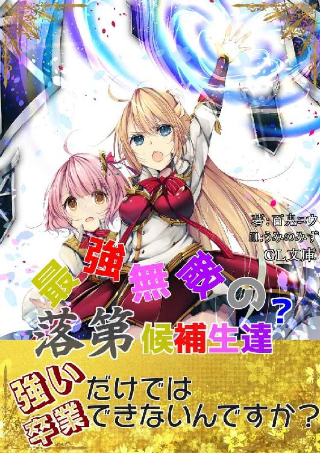
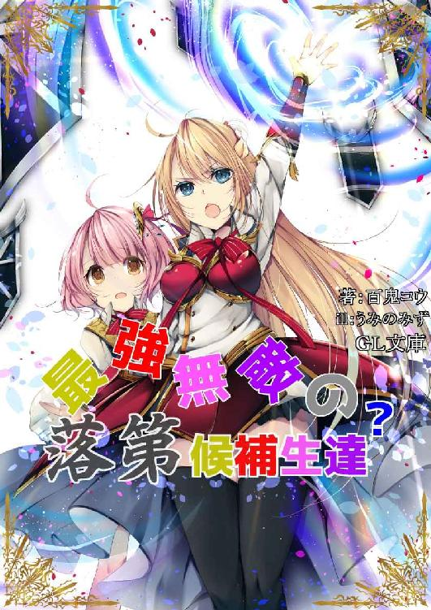
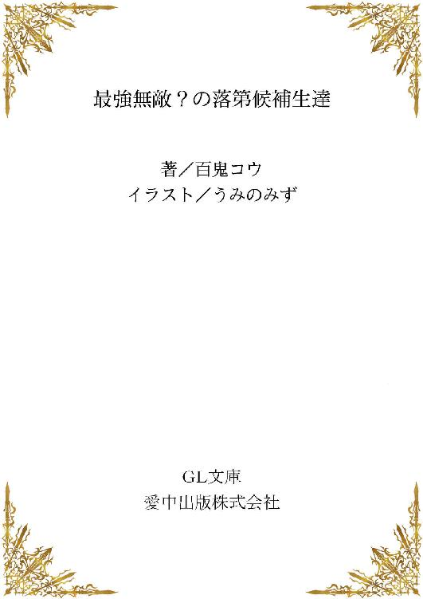
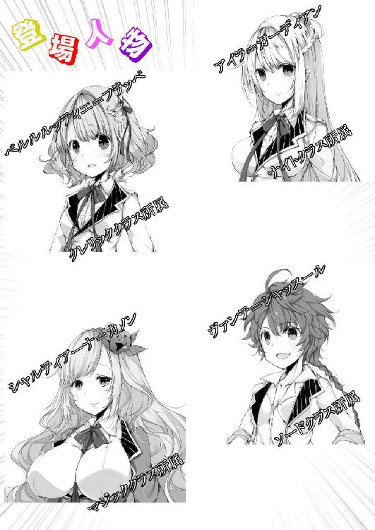
カツカツカツ、と一人の少女が石畳の廊下を乱暴な足取りで歩いていた。
その表情は険しく――怒り、悲しみ、恥ずかしさ、悔しさ、絶望。それらすべてが入り混じったような、複雑な様子を呈している。
歩みは次第に早まり、それと共に光り輝く金色の髪が波打ち、せっかく綺麗に手入れをされていたというのに、嵐に吹かれたかのように台無しになっていく。
しかし、少女はそんなことは微塵も気にしていなかった。
唇を噛み締め、鼻息も荒く、ただ駆け出すのだけはぎりぎりのところで押さえて、自らの最後の品格のみを保ったまま、廊下を駆け抜けていく。
――前言撤回。
少女はすでに駆け出していた。
少女は、この王立学院において、最優秀の成績を収め、歴代最高といわれるほどの生徒であった。
クラスのまとめ役である委員長を、初等部の頃から高等部まで全ての年度において勤め上げ、彼女のいるクラスは常に成績最上位をキープ。彼女自身も当然トップの成績しか取ったことは無かった。頭だけではなく、その肉体も均整のとれたプロポーションを維持し、豊かな胸に、引き締まった腰。そして、張りのあるお尻は少女性を残しながらも、大人の女性を感じさせるほどに魅力的であった。
さらには、完璧なのはそれだけだなく、頭脳はもはや言うまでも無く、応用力もあり、騎士として欠かすことのできない剣技と魔法も、それぞれ専門職の人間が舌を巻くほどに使いこなしていたのだ。剣聖にして大魔法使い。将来は宰相か大臣か。そう噂されるほどであった。
もっとも彼女は聖騎士隊に入ることを目標にしており、そして今すぐ聖騎士隊に入ったとしても、十分活躍できるどころか、隊長クラスに任命されてもおかしくないほどの腕を持っていた。
それなのに、その完璧な少女が、美しい金髪を振り乱しながら、どこかへ向かおうとしている。
その表情にはまったく余裕がない。
「くっ、こんなの間違いよ。どうして私が――ありえない。こんなのありえないっ。何かの間違いよ。手違いに決まっているわ。そう、先生に聞いてみればすぐに間違いだとわかるはず。『まあ、アイラさん。ごめんなさいね、どうやら手違いがあったみたいだわ。ええもちろんアイラさんが落第だなんてありえませんから。大丈夫、アイラさんは合格ですよ――』そう言ってもらえるに決まっているわっ」
少女は――アイラは一度立ち止まって廊下を蹴り上げると、多少落ち着いたのか走るのを止めた。
もとより、目的地はもうすぐ傍であった。
「そうよ、考えれば考えるほど、これはただの間違いなんだわ。私が落第だなんてありえないんだから」
口にすることで自分に言い聞かせているのか、アイラはだいぶ冷静になっていた。どうしてここまでその成績優秀なアイラが、取り乱しているのかというと――
――アイラは、王立学院高等部の卒業試験で、あろうことか『不合格』の評価を得てしまっていたのだ。
それまでの成績がどれだけ良くても、この卒業試験で不合格になってしまったら、当然卒業することはできず留年。そのようなことになれば、当然聖騎士などになることも出来ず、王宮で働くのも夢のまた夢となってしまうのだ。
「うん、絶対にありえないわ。だって、筆記試験は自己採点で満点だったもの。回答欄をずらして書くなんて間抜けなことはもちろんしていないし、細かい記述で減点されたとしても、九割以上は間違いなくとれている。実技だって完膚なきまでに相手を打ち負かしたし、相手の剣も魔法も一度たりともかすりもしなかったもの」
うんうん、とアイラは頷くと、目的地に到着したのか、歩みを止めた。
そこは、不合格となった生徒のみが集められる教室。
何人が不合格になったかは、アイラは知らないし、どうでもよかった。
ここへ来たのは、ただ自分の不合格が間違いであったという確認をしに来ただけなのだから。
アイラは扉を見上げた。
重厚な木製の扉には鉄を十字に打ち付けられており、そのボロボロの見た目からは、とうていここが教室であるなどとは思わないだろう。
「まるで囚人を閉じ込めておく部屋か、拷問室ね」
失礼なことを考えながら、アイラは扉を睨み付ける。
この王立学院でも、かなり外れの方にある教室は、久しく使われていないのか、人の姿もまったくない。
もしかしなくても、卒業試験で不合格を受けた生徒だけを集める、年に一度しか使われることのない教室であった。
「くっ」
アイラは唇を噛んだ。
いくら不合格は間違いだという訂正を受けに来ただけだとしても、この不合格者の烙印を押される扉をくぐるのには抵抗がある。
だが、ここでとどまっていても何も改善されない。
訂正は一刻も早くされるべきだ。
ごくりと、唾を飲み込み、アイラはゆっくりと扉の取っ手に指を掛ける。
恐る恐る扉を開けると、室内は意外にも普通の教室と同じであった。
備品は確かに古いものの、外の雰囲気から想像していた、地獄にでも繋がっているのではないかという考えは見事に空振りであった。
しかし、そんなことはアイラにはどうでもよかった。
なんの変哲も無い教室だとわかると、勢いよく扉を開け放ち、
「先生、これは何かの間違いです。私が不合格だなんて、ありえません。そうでしょう？」
中を十分に確認する前にまくし立てたが、
「っていない？」
残念ながらアイラの求める教師の姿はまだなかった。
その代わりでは無いが、すでに席に座っている生徒の姿が三名ほど確認できる。
全員、アイラと学科は違うようであったが、女子生徒であった。
（ああ、かわいそうに。この子達が不合格になってしまった生徒達なのね。日頃から真面目に勉強していれば、こんなことにはならなかったというのに）
自分も不合格者であるというのに、アイラはまるで他人事のようなことを考えていた。
「おやおや、これはまた珍しい人がきたもんだ。貴女のことは知ってるよ。常に成績トップ。学院設立以来の才女。将来の聖騎士隊長とまで言われている人がなんでこんなところに？」
それまで座って外を眺めていた少女が、アイラの姿を見て立ち上がった。
短めに切られた赤い髪は、かなりのくせっ毛のようで、至る所が跳ねている。
後ろ髪だけは伸ばしているのか、うなじ付近で一つに纏めて、雑に編まれた状態で背中まで伸びていた。
基本となる制服の上に、ソードクラス特有の羽織を着ている。
ソードクラスは主に剣術を専門に習得するクラスではあるが、現代では魔法適性を持った生徒も多いので、魔法剣士を志す生徒が多いクラスだ。
アイラはナイトクラスであり、こちらも専用の羽織を着ている。ナイトクラスはソードクラス以上に剣と魔法の適性が必要で、いわばエリートクラスであった。 ソードクラスを卒業した生徒が外敵と前線で戦うクラスだとすると、ナイトクラスは王宮と街を守護する為のクラスである。
敵が現れれば、命を賭けて剣を交えることに違いは無いが、攻のソード、守のナイトと一般には言われている。
「あら、私のことを知っているなんて光栄だわ。でも、私は貴女のことは存じ上げなくてごめんなさいね」
悪気はなく、アイラは言う。
「いや、知らなくて当然だよ。なんたって落第間近のいち生徒だからね。でも、アイラさんもここにいるってことは――。
少女がわざとらしく、口元を両手で押さえる。
「もしかして、アイラさんも落第っ？ お仲間だねっ」
「なんですって！」
アイラがきつく少女を睨み付けた。
「私に喧嘩を売っているのっ？」
そのまま殴りにでも行きそうなオーラを立ち上らせる。
「ちょっとお止めなさいな」
危険な兆候を感じ取ったのか、間に入る少女が一人。
オレンジ色の長い髪をかき上げ、豊かな胸を組んだ両腕の上に乗せながら、二人の間に入ってくる。
どうやらマジッククラスの生徒であるらしく、制服の見た目はアイラ達と変わらないものの、上下一体型のローブ状へと変更されていた。
ゆったりとしたデザインだというのに、隠しきれないほどの胸を二人に見せびらかすかのように突きだしてくる。
「喧嘩なんてしてもしょうがないでしょう」
そう言って、肩をすくめてみせる。すると、その動きに合わせるようにして、腕の上に乗った胸がブルンと揺れた。
思わずアイラの視線が釘付けになる。
「言うまでも無く、ここにいるということは不合格を貰ったということなのですから、仲良くしないといけませんわ。アイラさんもヴァンテさんのお仲間ですわ」
「......」
ビキビキと、アイラのこめかみに青筋が浮かび上がる。
「仲裁に来たかと思えばさらに煽ってくるなんて、やってくれるじゃない。二人とも覚悟は出来ているのよね。学年主席の剣と魔法は甘くないわよ」
「あら、煽ってなんていませんわ。だって本当のことなんですもの。アイラさんも不合格を貰ったからここにいるのでしょう？」
「......」
「ほら、やっぱりお仲間ですわ」
「いいえ、違うわ。私がここに来たのは間違いだと訂正を受ける為よ。どうして学年主席の私が不合格になるのよ。おかしいと思うでしょう？ 先生方がなにか間違いをしたのよ」
アイラはもう微塵も自分が不合格のままだとは思っていないようであった。
「えー、でもなぁ」
異論を唱えたのは、ソードクラスの、ヴァンテと呼ばれていた少女だった。
「先生がそんな間違いするかなぁ。だって、学年主席が不合格なんだよ？ 普通それがわかった時点で本当に不合格なのかどうか再確認すると思わない？ それでもやっぱり不合格だったから、ここに呼ばれたんじゃないの？」
「くっ」
確かにヴァンテの言うことはもっともだと、アイラも認めないわけにはいかなかった。自分に不合格の評価が付けば当然おかしいと思うのが普通だ。それなのに、正式に不合格者が集められる場所に、自分も呼ばれているのだ。
「でも、やはりこれは何かの間違いよ」
どれだけ論理的に説明されようとも、アイラは納得が出来なかった。
「あーあ、これだから優等生は。プライド高くて困っちゃうね。ダメなところはダメって認めた方が楽なのに」
ヴァンテが頭の後ろで両手を組み、さらに煽るようなことを言う。
「やっぱり喧嘩を売っているわね。いいわよ、その喧嘩買ってあげる。ソードクラスなら剣には自信があるのでしょう？ かかっていらっしゃいよ、完膚なきまでに叩き潰してあげるから」
「何、やる気？ いいよ、あたしも相手になってあげる」
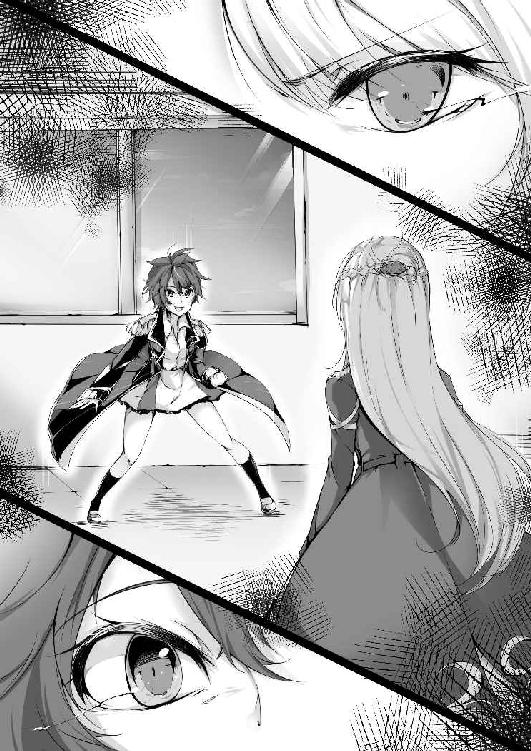
アイラとヴァンテがお互いに構える。二人は今は丸腰だが、それは気にしていないようであった。むろんふざけているわけでは無く、大真面目に丸腰のまま構えるということは、二人とも魔法で剣を作り出せるということに他ならない。
アイラもヴァンテも当然それがわかっている。
魔法の剣を生み出すのは一瞬だ。
その為の術式は体内に刻み込んである。それを起動する為のトリガーを口にすれば、一瞬にして魔法が発動する。
「あーもう、勝手にやってなさいな」
マジッククラスの少女は、呆れたように自分の座っていた席へと戻っていく。
それと入れ替わるようにして、それまで事の成り行きを怯えたように見守っていた少女が、おずおずと進み出てきた。
「だ、ダメです。今ここで問題を起こしてしまったら、不合格とか関係無しに、退学になっちゃいます。たとえ卒業試験が不合格だったとしても、こうして集められたと言うことは、補習なり再試験なりがあるはずです。大人しく先生が来るのを待ちましょう」
その少女は、クレリッククラスのようで、制服の上に、青と白で彩られた法衣のような物を着ていた。ふわふわのピンクの髪が愛らしく、見る者に癒やしを与える聖職者特有の、心を落ち着かせる雰囲気を持っていた。
その空気に感化されたのか、アイラとヴァンテの間に流れていた一触即発の空気が緩和されていく。
「確かにそうかもしれないけど――」
渋々と、アイラが構えを解く。
「まー、確かに一発留年はないよね」
ヴァンテもあっさりと引き下がる。あまり根に持ったりしないタイプのようだ。
「その通りだ。お前達、席に着け」
まるで、喧嘩が収まるのを見計らったかのように扉が開かれ、見るからに教師と思われる女性が姿を現した。
「まったく、あのまま喧嘩を続けるようであれば、即退学を言い渡していたところだぞ」
タイトなスカートに、これまた体のラインが浮き出るようなぴったりとしたシャツを来た女教師は、アイラとヴァンテを睨み付ける。
「先生、これは何かの間違いですよね。私が不合格だなんてありえません」
教師の言葉が耳に入っていないのか、真っ先にアイラが詰め寄った。
「席に着けと言っているだろう」
そんなアイラの訴えには耳を貸さず、教師はアイラの頭に手刀をかますと、押しやるようにしてアイラを席に着かせる。
「くっ」
何かを言いたそうにしながらも、渋々とアイラは席に座った。
「あの、さっきは生意気なことを言ってしまってごめんなさい。わたし、アイラさんのことはとてもよく知っていて、こうして席を並べることが出来るなんて光栄です」
アイラに話しかけたのは、最後に止めに入ったクレリッククラスの少女だった。
両手を胸の前で合わせて、心の底から嬉しそうにアイラのことを見つめてくる。
思わず同性にもかかわらず、アイラはドキッとしてしまった。
これが聖職者を目指す者がまとっている癒やしのオーラか、と少し感心してしまう。
「まあ、不合格者の集まりで光栄も何もないけどね」
光栄だと言われて嬉しくはあったが、素直にそれを口に出せないアイラだった。
「とりあえず全員席に着いたな」
教師が四人を見廻しながら頷く。
「不合格者ってこの四人だけ？」
ヴァンテが机に突っ伏しながら「うぇえ」と情けない声を上げた。
「そうだ。この四名が今年度の卒業試験で見事不合格になった者達だ」
全然見事じゃ無い。アイラは眉をひそめた。
たった四人。その四人の不合格者の中に自分が入れられている。
なんて不名誉な――
アイラは目眩がしそうになった。
アイラの家系は代々この王立学院を卒業して、王宮で働いてきている。過去に大きな戦があったときには、王族を守り抜き、国王からガーディアンの姓を貰うほどの実績を残してきたのだ。その家系に泥を塗ってしまった。
人目もはばからず、大声で叫び出したかった。
「あー、まあ言いたいことは色々あるかもしれないが、ここにいる四名を不合格にしたのにはもちろん理由がある。実力だけをみれば不合格というわけではないが、ある一部に致命的な問題を抱えているから、不合格になっているというわけだ」
「ある一部とは？」
アイラが前のめりになって問いかける。
「それが今回の問題だ」
アイラを制して教師は続ける。
「お前達には確かに不合格を言い渡したが、卒業できるチャンスはまだ残っている。これから行う追試に合格できたら卒業させてやろう」
「本当ですねっ」
教師の言葉を聞き、アイラの顔がパッと輝く。
「本当だ。追試の内容はこうだ。今日から三日後、お前達四人でパーティーを組んで貰い、学院裏の実習用の洞窟へと入って貰う。そこで、今までは第二区画までしか探索を許可していなかったが、今回は第十区画まで行き、その最奥にある到達の証を取ってきて貰う」
「第十区画まで......」
さすがにアイラの顔が曇る。
実習用の洞窟というのは、学院が管理している魔物の棲む洞窟のことだ。奥へ進むほど凶悪な魔物が居るらしいが、学院の生徒が探索出来るのはかなり弱い魔物しかいない第二区画まで。それ以降は大人の騎士などでなければ行くことができない。
それでも第十区画まで言ったという話はまったく聞いたことがない。まさに未知の世界ということになる。
これは勇気を試しているのか、それとも――
他に何か意図があろうとも、アイラ達には拒否権はない。これをクリアーしなければ落第であり、留年するか退学するしかないのだ。
「第十区画ってかなり無謀じゃない？ 学院の生徒でそこまで行った人っているの？」
ヴァンテが眉をひそませる。
「学院の生徒どころか、現職の騎士ですら第五区画までしか行ったことはないだろうな」
「そんなっ」
クレリッククラスの少女が小さく悲鳴を上げる。
「言っておくが、これは特例特別なのだぞ。本来であれば、この学院の生徒で卒業試験で不合格などという成績を取った者は、即退学になってもおかしくない。実際にそれも検討されていた。しかし、それではあまりにも可哀想だということで、特別に追試を行うことにしたのだ」
「くっ」
どれだけ無謀な内容うであろうとも、アイラ達にはそれを受けるしか選択肢はないのだ。退学が嫌ならやるしかない。
「第三区画よりも先については地図を配布する。まあかなり昔に作った物だから、多少の間違いはあるかもしれんが、無いよりはマシだろう。それがあればとりあえずは第九区画まで辿り着くことができるはずだ。だが、残念ながら第十区画の地図は無い。自分たちの足で歩き、目的の物を探し出して欲しい」
「一つよろしいでしょうか」
手を挙げたのは、マジッククラスの少女だった。
「なんだ」
「地図も無いような場所に、先生方はどうやってその目的の証とやらを置いてくるのですか？」
確かにもっともな質問であった。
「それ自体はなにも難しくは無い。魔法でその証だけを浮かせて運べばいいだけだからな。第二区画と第三区画の間には、物理防壁、及び、魔法障壁があるが、それ以降には地形によって区画を分けてあるが、実際に壁などがあるわけではない」
「なるほど。それならば第十区画の地形を知らずとも、適当な場所へ置いてしまえばいいというわけですか」
マジッククラスの少女は納得したと、頷く。
「もう一つよろしいでしょうか」
今度はアイラが手を挙げる。
「なんだ」
「第三区画以降の魔物について、どれほどの強さなのでしょうか」
「そうだな」
教師は少し考え込む。
「まあ、端的にいえば、それまでの魔物の強さとは比較にならないと言っておこう。それゆえ、学院の生徒達は第二区画までしか探索を許されていないというわけだ。何故急にそれほどの違いが出るか、それはひとえに物理防壁及び、魔法障壁が関係している。第二区画までの魔物は、洞窟の外から侵入し、その後洞窟に住み着いた種族が多い。しかし、第三区画より先は、洞窟の奥からやってきた魔物ということになる。防壁と障壁で、完全に生息域を分けてしまっているというわけだ」
「そんな違いがっ」
アイラは素直に驚いた。
「このことは基本的には生徒には教えていない。教えれば悪戯に不安を煽ることになるかもしれないからな」
「だとすると、洞窟の奥は一体どうなっているのでしょう。第十区画に何かがあると？」
「それについてはわからんし。実際は第十区画で終わりというわけでは無い。第十区画の終わりには急激な縦穴があり、まだその先があることはわかっている。もっとも、その先を見た者はいないから、何があるかはわかっていないがな」
『............』
四人は黙るしか無かった。
そんな危険そうな場所へ、自分たちは行かなければならないのかと。
「まあ、少し煽ってしまったが、私はお前達なら必ずややり遂げてくれると信じている。お前達は別段実力がないわけではない。むしろ学院始まって以来の実力の持ち主達ばかりだ。ただ、初めに言ったが、ある致命的な問題があるが故に卒業試験が不合格になったにすぎない。この追試験の中で、目的を達成し、おのおのの問題を見つけ出し、それらを改善できるようにしてもらいたい。そうすれば晴れて学院を卒業できるだろう」
「...わかりました」
アイラは頷いた。
「では、今からお前達は運命を共にするパーティだ。そうだな、まずは自己紹介をして、それからどう攻略するのか考えるといいだろう。私はもう戻るが、三日後までに装備を整えておくように。以上だ」
それだけ言うと、教師は部屋を後にした。
‡‡‡‡
部屋に残された四人はしばらく誰も口を開かなかった。いや、開けなかったといっていい。こらからのことを考えると、憂鬱になるのも無理は無かった。なにせ、実力の程もわからない四人で、誰も行ったことの無い――ただのピクニックでは無く、魔物の存在する洞窟のはるか奥までいかなければならないのだ。
「まあ、こうしていても仕方ないわ。先生の言ったように自己紹介をして、お互いのことを知る必要があるわ。探索の方針はそれから決めましょう」
「ま、それしかないね」
ヴァンテが仕方なく賛同する。
「それでは私からで良いかしら」
先陣を切ったのはアイラだった。彼女はこういったとき、真っ先に動くタイプだった。長と名の付くものには進んで立候補するし、誰もやりたがらないようなことも嫌な顔一つせず引き受ける。それは自身のプライドがそうさせるのだ。名門ガーディアン家の長女として、常に人の上に立つような行動をするよう、自らに戒めている。それが周囲にも強制しようとするのが玉にきずではあったが。
アイラは他の三人が、どうぞどうぞと促すのを見て、教室の一番前の壇上へと立つ。
「私の名は、アイラ＝ガーディアン。所属はナイトクラス。そこで、常にトップの成績を収め続けてきたわ――」
アイラは、ヴァンテが何かよけないことを言い出そうとしたのを察知して、視線のみでそれを封じて続ける。
「ガーディアン家の名は、言わずとも知っていることかと思うけれど、うちの家系は代々王家を守護する役割を担ってきたわ。私は剣も魔法も得意だけれど、一番得意なのは守ることよ。盾の扱いは、物理、魔法共に誰にも負けるつもりはないわ。実際、今まで模擬戦で負けたことはないし。つまり、何が言いたいかというと、貴女たちはとても運が良いということ。私がいれば、たとえどんな凶暴な魔物が現れたとしても、必ず守り、敵を打ち倒してあげる。私のことをどう思っているかは知らないけれど、それは私の誇りと名誉に賭けて、必ず成し遂げてみせるわ。以上よ」
決まった、と言わんばかりに胸を反らして、アイラは自分の席へと戻っていく。
「凄いですっ。アイラさんがいれば追試も合格間違いなしですね」
両手放しで素直に褒め称えるのは、クレリックの少女だった。
それには関与せず、次はヴァンテが壇上へと赴いた。
「じゃ、次あたしね。あたしの名前はヴァンテ＝シャッスール。所属はソードクラスだよ。アイラには悪いけど、あたしは守って貰わなくても大丈夫だから。あたしも自分一人の力で試験を突破できると思ってるから。逆にあたしがみんなのことを守ってあげないといけないなぁと思ってたくらいだもん。ナイトクラスとソードクラスは模擬戦でやり合うことがないから、アイラの実力は知らないけど、ま、あたしの方が強いかな。以上っ」
自信満々に言ってのけるヴァンテを、アイラは忌々しげに睨み付ける。
ナイトクラスとソードクラスは、学院内でも相当に仲が悪いことで有名だ。極力二つのクラスが対峙しないように学院側もかなり気を使っている。
ナイトクラスはほぼ貴族の子女しか入れず、ソードクラスは一般市民ばかりなので仕方のないところだった。
「まあまあ、喧嘩はおやめなさいな。わたくしたちは、これから命運を共にする仲間なんですのよ」
そう言って、ヴァンテと入れ替わるようにして壇上へ立ったのは、マジッククラスの少女だった。
「わたくしは、守って下さるというのなら大歓迎ですわ。何もせずに試験に合格できるのならいうことはありませんもの。あ、わたくしの名前はシャルティアーナ＝カノンといいますわ。シャルでも、ティアでも、好きなようにお呼びになって。所属はマジッククラス。わたくしの場合は、自分の何が問題かはわかっていますので、試験合格の証さえ手に入れることができれば、なんでも構いませんわ。むしろ、どうやって自分の問題をごまかすか、という方に頭を悩ませているくらいで」
「問題がわかっているって、それはどんなことなのかしら」
アイラが興味を引かれて口を挟む。自分の問題が何かわかっていないアイラにとっては、非常に気になる話題であった。
「単純なことですわ。わたくし、使える魔法が極端に少ないんですのよ。攻撃魔法が一つと、補助魔法が一つ。それしか使えませんの」
「それは少ないわね」
アイラは呆れたように言った。
魔法は、術者本人に魔術式を刻印することで、即時発動させることができるようにしている。刻印できる魔法の数は、術者本人の生まれ持った資質にほぼ左右されてしまう。後天的に刻印できる量を増やすことはあまりできない。刻印できる量、それがすわなち魔法使いとしての才能となってしまう。たった二つの魔法しか使えないというのは、一般人と何も変わらないレベルであり、とてもじゃないが魔法使いと呼べる数では無い。
アイラですら魔法は七つほど刻印しており、まだ容量的には余裕がある状態だ。
「もう新しく魔法を刻印することは出来ないの？」
「ええ、残念ながらすでに容量が一杯でして」
シャルティアーナはニッコリと微笑んだ。
当の本人は大して気にしていないようである。
「それはまあ仕方ないわね。まあ、いいわ。私に任せておけば証を持ち帰ることはできるでしょうから、うまいごまかし方を考えておきなさい」
「そういたしますわ」
シャルティアーナが胸を揺らしながら自分の席へと戻る。
「それじゃ、最後は貴女ね」
アイラが隣に座っているクレリッククラスの少女の肩を軽く叩く。
「は、はいっ、頑張りますっ」
端から見てもわかるくらいに緊張したまま、クレリッククラスの少女が壇上へと上がる。
「わ、わたしはベルルルッティエ＝フラッペといいます。所属はクレリッククラスです。わたしも、魔法が全然使えなくて、ご迷惑をお掛けしてしまうと思いますけど、よろしくお願いします。」
ベルルルッティエがこれでもかというくらい頭を下げる。
「魔法が使えないって、貴女の場合は回復魔法が使えないということ？」
アイラが首をかしげる。
「はい、そうです。でも、回復させることはできるんです。ただ、直接触れないといけなくて......」
「どういうことかしら。それは魔法ではないの？ ちゃんと魔法を刻印したのに、発動させることができないということ？」
「そうではないんですけど。なんて説明したら良いか......。わたし、一度も魔法を刻印したことがなくて、刻印することも出来なかったんですけど、でも、生まれつき回復魔法的なものが使えて、それを使うには相手に触れないとダメということなんです。親も先生もこれが魔法なのかなんなのかよくわからないらしくて、だから魔法が使えないんです」
「うーん、まったくわからないわね。まあそれが貴女の――ベルの問題ということなのよね、多分」
「そうだと思います～」
ため息を吐くアイラに、ベルルルッティエは情けない声で返事をする。
「結局、回復は出来るのよね？」
「はい、それはもう、どんな傷でも癒やして見せますので」
ベルルルッティエは両腕を曲げて、まったく膨らまない力こぶを見せる。
「ならとりあえずは問題ないわ。クレリックで回復魔法が使えなかったらどうしようかと思ったけど、回復してもらえるのなら、私がいくらでも前線に出られるもの」
探索において、回復役がいるかどうかはかなり切実な問題となる。ましてや、未知の領域まで探索しようというのだ、ベルの力は何を置いても必要になるに違いない。
「これで全員の自己紹介は終わったようね」
ベルと入れ替わるようにして、再びアイラが壇上に立つ。
「概ねみんなのことはわかったわ。シャルとベルは問題もハッキリしているようだし、解決方法があるかどうかはわからないけど、とりあえず私とベルがいれば証は手に入れることは出来ると思う。それがあれば多少のお目こぼしはしてもらえるのではないかしら」
「おやおや、さすがナイトクラスのエリートさんは言うことが違うね。自分一人の力でなんとかしようとしていらっしゃる」
ヴァンテが行儀悪く、机の上で足を組みながら毒づく。
「あら、貴女も戦力になってくれるのかしら？」
「さー、どうだろ。あーいう狭いところでの戦いって苦手でね。あたし一人だけだったら余裕なんだけど。そうだね、アイラ達が、あたしの遙か後方を付いてきてくれるっていうのなら大丈夫かな。そうすればあたしが一人で魔物を蹴散らしてあげる」
ヴァンテはニッコリとウインクをする。
「あら、なかなか自信がありそうじゃない。でも、誰かが近くにいるとダメということ？ そんなめちゃくちゃな暴れ方をするのかしら」
「さー、どうでしょ」
ヴァンテははぐらかす。
「ふーん、ま、何にせよこの四人で追試を乗り切らないといけないのだから、頑張りましょう」
「そうするしかないね」
たとえ相手にどんな感情を抱いていようとも、それだけは確かなのでヴァンテも渋々頷く。
「わたくしは試験がクリアーできるならなんでもいいですわ」
シャルティアーナは他人事のように長い髪をかき上げた。
「わたしはできる限りアイラさん達に協力しますので、一緒に試験を突破しましょう」
やや入れ込み過ぎな様子ではあるが、ベルルルッティエが胸の前で両手を合わせて祈りを捧げた。
洞窟の、第三区画以降の地図がアイラの元へ届けられたのは、その日の夕方であった。アイラは急いで他の三名を集め、学院の敷地内にある寮の自室へと集合をかける。ヴァンテも、シャルティアーナも、ベルルルッティエも、自身の進退がかかっているので、すぐにアイラの元へと集まった。
全員が揃ったのを確認して、アイラは貰った地図をテーブルの上に広げて見せた。
「私は先に見させて貰ったけど、なかなか厄介だわ」
地図を確認するまでもなく、他の三人もそれは感じ取っていた。
なにせ、広げられた地図は、両手を広げても足りないほどに大きく、テーブルの上全てを覆うほどであったからだ。
さらには、アイラ達が実習で行ったことのある第二区画までは、地図の五分の一程度を占めるに留まっており、単純に計算しても、その五倍の時間がかかるのは明白であった。
実習で探索したときには、朝一で洞窟に入ったとしても、第二区画まで探索して戻ってくる頃にはお昼を過ぎていたものだ。実習の時は、大人数だということもあり、一人で魔物と戦う回数は一度か二度で済んでいた。しかし、今回はたった四人で探索しなければならない。出会う魔物全てと戦わなければならないことを考えれば、時間はさらにかかることだろう。
「今回の目的は第十区画と言うことで、とにかく奥を目指せば良いのだから、無視できる魔物は無視してしまえばいいわ。それでも、第二区画突破まで三ジゲン程度というところかしら。奥に行くほど強い魔物がいるとなると、どう考えても洞窟の中で一泊か二泊しないといけないわね」
「えー、あの薄暗いじめじめした中で野営するの？」
ヴァンテが舌をべーっと出して顔を歪ませる。
シャルティアーナも、ベルルルッティエも口には出さないが、それは遠慮したいと言いたげだった。
「もちろん一気に突破するのが理想だけれど、さすがに体力が持たない気がするわ。地図を見ると、第五区画まではほぼ平坦な道のりなのだけど、第六区画へは長い下りを降りなければならないみたいなの。というよりも、第六区画が全て下りになっているわね。それ以上進むと帰りが大変だというので、第五区画までしか騎士隊の人たちも潜らないのではないかしら。重装備で降りるなんて、考えたくもないものね」
アイラは地図を指でなぞりながら、第六区画まで進める。
「おそらくだけれど、第六区画は地形が地形だから、魔物も少ないと思うの。一度目の野営をするならここがいいと思うわ」
「それは仕方ありませんわね」
シャルティアーナが小さくため息を吐く。
「その後はまた平坦な道が続き、第九区画まで続いているわね」
そこまでは問題がなさそうに見える。魔物の強さ次第ではあるが、地形的には至って普通である。
「問題は、地図に載っていない第十区画ね」
アイラは眉をひそめて、地図の一番最後の方を指差す。
「私の予想で申し訳ないのだけど、ここ、かなり急激な登りになっていると思うのよ」
地図にはまともに第十区画の情報は載っていないが、第九区画の終わりに壁のような物が描かれている。第六区画で緩やかに下った分が、そこで一気に上がったとしても不思議ではない。
「だとすると、ロープなどの準備も必要でしょうか」
ベルルルッティエが必要そうな装備を書き出していく。
「そうね。あったほうがいいでしょうね。もうここへは実際に行ってみないとわからないけど、二回目の野営のタイミングがとても難しいわ。第十区画まで一気にいけるならいいけど、その手前で一度野営をした方が体力的にもいいかもしれないわね」
「それなら一度目の野営が終わったら、すぐに偵察を出した方がいいんじゃないかな。第九区画まで一気に走って、どうなっているのか見てくるの」
ヴァンテが地図を指で勢いよくなぞって往復させる。
「それができるなら一番いいけれど、偵察役はかなり危険よ。魔物の注意を一身に引き受けてしまうことになるし。それは誰がやるのかしら」
「もちろんあたしがやってあげるよ」
ヴァンテがこともなげに言う。
「単独行動の方が気楽だし、偵察だけだったら特に問題ないと思うしね」
「それは助かるわね。では、もし、第十区画まで一気に行けるようであれば、証を速攻で探して、また第六区画まで戻ったところで二度目の野営をしましょうか」
「あら、一気に出口まで戻らないのかしら」
シャルティアーナが首をかしげる。
「無理はしなくていいと思うわ。第十区画までにかなりの戦闘が予想されるし、何より第六区画から第十区画まで往復するだけで十ジゲン以上の時間がかかってしまうわ。とてもじゃないけど、それ以上の行軍は不可能でしょう」
「それもそうですわね」
シャルティアーナが頷く。
「予定としてはそんなところかしらね。まああくまでも予定だから、実際の状況に応じて臨機応変に対応したいところだけれど。それから、食料もすぐに調達しておいた方が良いわね。乾燥していて腹持ちが良い物。軽くて小さければ言うこと無しだわ。味や見た目はもう二の次三の次ね。もし食べるものがなくなったら、魔物の肉を食べる羽目になるかもしれないわ」
「そ、それはいやですぅ」
ベルルルッティエがその場面を想像したのか涙目になる。
魔物の肉は食べることができなくもないらしいが、中には人体には有毒であったり、病原菌をもっていたりする場合が多いので、よほどのことがない限り魔物の肉を食べるということはない。
「水は最低限だけでいいと思う。中に地下水があるみたいだから、そこで補充できるでしょう。水袋さえあればなんとかなるはずよ。武器防具は各自で用意すること。とりあえずはそれくらいかしら」
自分からは以上だと、アイラは他の三人を見廻す。
「あたしも特にないよ。あれこり考えるよりも、その場の状況に応じて行動するほうが好きだしね」
ヴァンテが鼻息を一つ大きく吐いて頷く。
「わたくしも――一つ心配事があるとするなら、第三区画以降に魔力素子があるのかどうかというところですけど、試験合格の証を魔法で運べるというのなら、心配することはないかしら」
シャルティアーナが頬に手を当てて軽く首を傾ける。
「そうね。むしろあーいうところのほうが魔力素子が溜まり込んでいるのではないかしら」
アイラが、魔力素子の分布状況を書かれた論文を思い出しながら答える。
魔法を使う為には、魔術式を自身に刻印して、発動トリガーを口にすればいいだけだが、魔力がなければ発動しない。魔力は体内にも溜め込まれているが、自然界にも目に見えないが魔力素子として存在している。そのどちらかを使って発動することになる。体内に溜め込まれている魔力のみを使う方法だと、魔力素子がないところでも魔法が使えるが、すぐに魔力切れを起こしてしまう。
故に一般的には、自然界にある魔力素子に干渉して、魔法を発動させることが多い。その方がより高威力の魔法を使うことができるからだ。
その魔力素子は、草原などの広く開けたところよりも、洞窟などの方が濃さが増しているという研究結果が出ている。
吹き抜けで風通りが良かったりするとまた別だが、これから探索する洞窟は物理防壁で隔離されている区間があるので、魔力素子が溜まりやすい状況ができているはずだった。
「魔力素子が濃いということは、魔法を使う魔物がいたら......」
ベルルルッティエが体を震わせる。
「そうね、かなり厄介なことになるかもしれないわね」
アイラはその可能性も当然ある、と頷く。
「もう考えていても仕方ないわ。私たちにはやるという選択肢意外ないのだから。覚悟を決めて、出発までの間にできる限りの用意をしましょう」
そう、アイラ達にはそれしかないのだ。
四人は顔を見合って頷いた。
そして、各が準備を進め、ついに出発の時が来た――
‡‡‡‡
晴れ渡る空には雲一つ無い。
まさに絶好の探索日和である。
もっとも、探索するのは洞窟内であり、天気などほとんど関係なかったが。
「みんな準備は良い？」
アイラが洞窟の前に全員集まったのを確認して声を掛ける。
その場にはアイラ達四人しかおらず、教師の姿も応援の生徒達の姿もない。
なんとも寂しい追試験の幕開けである。
「あたしは何の問題もないよ。今すぐにでも行ける」
「何の問題もないって、ヴァンテさん、なんて格好をしているのよ」
アイラがヴァンテの姿格好を見て顔をしかめた。
ヴァンテは学院の探索用の格好ではなく、下着の上から申し訳程度の鎧を着ているのみであった。脚甲はつけているが、太ももは露出し、動きやすさを重視しているのか、下半身を覆う防具は何もない。ぎりぎり股間部分のみを何かの鱗のような物で覆っているが、それが何の役に立つのかアイラには理解が出来なかった。上半身も同じようにほとんど防具がなく、胸の辺りと肩部分、そして手甲をはめているのみで、何から身を守るつもりなのかと小一ジゲンほど費やして問いただしたいところであった。
「いやいや、長丁場になるんだから、なるべく身軽な方がいいでしょ。それにあたしの役目は偵察なんだからなおのこと。それに、ベルが回復してくれるなら、防具なんて大して必要ないしね」
「まあ、一理ないこともないけれど――あと、それは何かしら」
ヴァンテの格好には目をつむるとして、その背に背負っている物は何かと、アイラは指摘する。
「これ？」
ヴァンテは背中に背負っている、大量のボロ剣の束を揺らして見せた。
それは初め、野営の時に使う為の薪でも持ってきたのかと思っていたのだが、よく見れば薪の束のようにして背負っているボロ剣であり、そうとわかり、アイラは目を疑ったのだ。
「そう、それよ、何よそのゴミは。洞窟内に捨てる為に持ってきたのかしら」
「そんなわけないでしょ。これがあたしの武器なんだから。少しでも戦力になろうと思って持ってきたのに、ゴミは酷いなぁ」
「いや、どう見てもゴミにしか見えないし」
アイラはヴァンテが背負っている剣の中の一本を手に取ってみた。
明らかに使い込まれ、刃はぼろぼろに欠け、木の板すらまともに切れないのではないかと思わせるほどに酷い物だった。
よく見れば、それは実習で使われている剣であり、廃棄になった剣をヴァンテは貰っていたということなのだろう。
「やっぱりゴミじゃない」
アイラはイラつきながら、ボロ剣をヴァンテの背荷物の中に戻した。
「違うんだって、わたしはこれじゃないと洞窟の中みたいな狭いところじゃ戦えないの」
ヴァンテは本気でこれで戦うつもりのようだった。
「もういいわ。どうせ端から戦力としては期待していないのだし、偵察さえちゃんとやってくれるならいいわよ」
アイラは投げやりに言った。
「シャルは普通の格好ね」
「ええ、わたくしはマジッククラスですから、特に用意する物はありませんわ」
「まあ、そもそもまともに魔法が使えないと言っていたしね」
シャルティアーナはマジッククラス用のローブ状になっている制服を着ているのみであった。杖といったものも持っていない。
「攻撃魔法と補助魔法が一つずつだったかしら？ それってどういうタイプの物なのかしら」
「そうですわね。攻撃魔法は放出系の物で、補助魔法は、その放出系の魔法の威力を高める為のものですわ」
シャルティアーナが「うふふ」と微笑む。
「つまりは補助魔法がないとまともに威力が出せないと？」
魔法はそれ自体が高い威力を持っている物が多い。その威力を補う必要は基本的にはないはずである。よほどのことがない限り、補助魔法で威力を上げようと思う人間はいないのが普通だ。それをするくらいなら、別の攻撃魔法を刻印した方が合理的というものだ。
「そうなんですよ。わたくしとしては、もっともーっと威力を出したいのですけど、なかなか思い通りにいかなくて」
「わかる、わかるよぉ、その思い通りに力を使えない気持ち」
「でしょう。こんな程度じゃ全然足りませんもの」
何故かヴァンテの共感を得られたようで、肩を組んで意気投合してしまう。
「使い物にならない者同士仲良くなるのは良いけど、足だけは引っ張らないでよね」
「はい、はーい」
「わかっておりますわ。一生懸命後をついて行きますので」
本当に大丈夫かなと、アイラは思ったが、それ以上は口にしなかった。
「ベルは......あら、可愛らしい格好ね」
うふっ、とアイラは頬が緩むのを感じた。
ベルは上着こそ、学院指定のものだったが、スカートがとても短いものに変更されていた。ブーツの上からスカートの裾の間では、健康的な太ももが眩しく輝いている。そして、法衣を着たいたときに垂れ下がっていた布を体に巻き付けていた。
「この下がどうなっているのか、お姉さんに見せてもらえるかしら」
つい悪戯心を出して、アイラはベルルルッティエのスカートを掴む素振りを見せる。
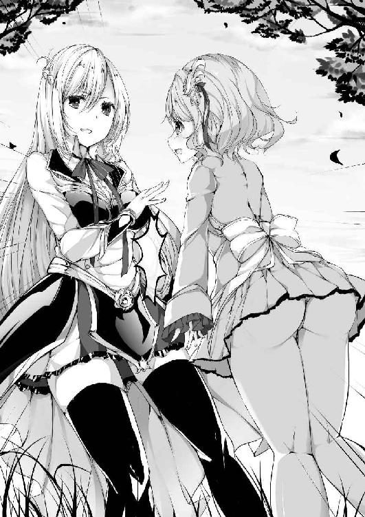
「だ、ダメです。ちゃんと新品の物を着けてますけど、それに同級生ですよっ」
「あら、残念。でも、そんなに短いと、道中で見えてしまうわよ？」
「それは、まあ諦めてますから。長い法衣を着ていたら、地面に擦って汚くなるのがわかってますし、今回は動きやすさを重視した方がいいと思ってこれにしたんです」
「そうね、それでいいと思うわ」
よしよしと、アイラはベルルルッティエの頭を撫でた。
「ベルも杖のような物はもっていないのね」
クレリックも、杖を媒介にして魔法を使うことが多いのだが、
「杖があっても魔法が使えなければ意味が無いですし、わたしはこれでじゅうぶんです」
そう言って、ベルルルッティエはグローブを嵌めた拳を打ち合わせた。
意外にも、ベルルルッティエは拳で戦うつもりのようだ。
「まあ無理はしてはダメよ。基本的には私の後ろにいてね。貴女のその綺麗な足に傷が付いたら悲しくなってしまうもの。ちゃんと私が守ってあげますからね」
「はいっ、わかりました」
ベルルルッティエは元気に返事をした。
「準備は本当にこれでいいのかしらねぇ」
自分とベルルルッティエはともかく、ヴァンテとシャルティアーナの姿を見ていると不安になってしまう。
言っては悪いが、この二人のことは戦力として考えていない。お荷物ではあるが、それがアイラには都合が良かった。
戦力にならない二人に加え、クレリッククラスの生徒を守り抜きながら、見事追試をクリアーしてみせる。
自分にどんな問題があるのかはまったくわからないが、それだけの実績を残せば学院側も卒業を認めてくれるはずだ。
その考えによほど自信があるのか、アイラは「うん、うん」と何度も頷いていた。
「もうこれ以上考えていても始まらないわね。私たちには進むしかないのだから、気合いを入れていくわよ」
『おーっ！』
アイラと他三人の声が、誰もいない洞窟の前で鳴り響いた。
アイラ達の探索する洞窟は、学院裏手の丘の上にぽっかりと入り口を広げており、扉といった物は存在していない。それは、わざと外の魔物などが入れるようにしているのである。
洞窟に住み着く魔物は、基本的には弱い。じめじめとした暗所を好んで住み着く魔物以外は、外での生存競争に負けて、仕方なく洞窟に住んでいるような物達ばかりだからだ。
「相変わらず、ちっこいのがうろちょろしているわね」
洞窟に入ってほどなくして、魔物の姿が見え隠れし始めたが、向こうから襲ってくるこことはあまりなかった。襲ってくる魔物と言えば、知性のかけらもなさそうな巨大ワームであったり、アイラ達の半分ほどの背丈を持った、大蝙蝠くらいである。ワームも大蝙蝠も、アイラの敵ではなかったが、三人を守りながらの戦闘はなかなか神経を使う物であった。
むろんこの程度でピンチを招くようなことはなかったが、一度戦闘に入ると足止めされる時間が長くなってしまう。
できるだけ速やかに奥を目指したいが、襲ってくる気概のある魔物は全てこちらに向かってくるので、相手をしないわけにはいかなかった。
「よーし、あたしもちょっと戦闘に参加しようかな」
それを見かねたのか、ヴァンテが背中に背負っていた剣の束から、一本抜きはなった。
「別に手伝って貰わなくても大丈夫だけど？」
「大丈夫だってのはわかるけど、このままだとかなり時間がかかりそうだし、第三区画まではささっと行っちゃいたいじゃない？」
ヴァンテはやる気になっているようで、ボロ剣を素振りして具合を確かめていた。
「......わかったわ」
ここで、余裕のあるうちに力量を見ておいた方がいいのかも。そう考えて、アイラはヴァンテに次の獲物を譲ることにした。
戦力になるなら良し。ならないとわかれば大人しく後ろに下がっていてくれるだろう。
「さ、かかっておいで」
ヴァンテが剣を構えると、それに呼応したかのように、洞窟の天井から、大蝙蝠が数匹、耳障りな羽根音と共に降ってきた。その大蝙蝠の姿が見えると同時に――
「よっと」
ヴァンテが手にしていた剣を投げ放った。
狙いは違わず、一匹の大蝙蝠の体を貫き、見事に屠る。
ヴァンテはすぐさま次の剣を取り出し構える。
「ほーら、おいで」
ヴァンテがさらに挑発すると、大蝙蝠が二匹同時にヴァンテに襲いかかった。
「うっしゃあぁあああっ！」
気合いと共に、ヴァンテがそのうちの一匹に向かって剣を叩きつける。
グシャッという音と共に、大蝙蝠が肉片をまき散らしながら、ボロぞうきんのようになって洞窟の遙か先まで転がっていく。
そこまでは良かった。
問題は、ヴァンテの手にしていた剣だ。
いくらボロ剣だったとはいえ、たった一度振っただけで、柄は握りつぶれ、刃も粉々に砕け散ってしまったのだ。
「やっぱり一回が限界だなぁ」
ヴァンテは慣れているのか、すぐさま次の一本を取りだし、同じように大蝙蝠に向かって斬りかかる。
再び――
グシャッという魔物がつぶれる音と、柄が握りつぶれる音が重なり、パァンという音と共に刃が砕け散った。
「ちょっと貴女なにやっているのよ。だから、そんなゴミを持ってきてどうするのかって聞いたのに」
たった二回の戦闘で二本の剣が壊れてしまった。いや、最初に投げた分を含めれば三本か。
「えー、だって新品でも同じだもん。だったら捨てる予定の剣を使った方が合理的じゃない？」
どうやら、ヴァンテは新品の剣でも同じように握りつぶし、刃を壊してしまうらしい。
「貴女もしかしてバカ力があるっていうこと？」
「まあそうなるかなぁ」
ヴァンテは素手になった両手を頭の後ろで組んで答えた。
ごく希に、ヴァンテのように普通の人の何倍もの力を持っている人がいるということは聞いたことがある。
それは他の人からしたらとても羨ましい事なのかしれないが、実際に目の前で見るとそれほどいいものではないというのがわかった。
「力の制御は出来るの？」
「まぁ普通の生活をしている状態ならね。でも、戦いとなると、やっぱ基本全力になっちゃうじゃない？ そうすると、まぁ見て貰ったとおりになっちゃうんだよね」
「はーっ」
アイラは盛大なため息を付いた。
「ええと、ボロ剣は何本持ってきたのかしら」
「三十本くらいかな。それ以上だと背負えないことはないけど、邪魔じゃない？」
「三十本でもかなり邪魔だけどね」
アイラはヴァンテの背中にある剣を睨み付けた。
「ってことわよ、貴女三十回しか――今三本ダメにしかたら、あと二十七回しか戦えないってことじゃない」
「そうなっちゃうかなぁ」
「はーーーーっ」
アイラはさらに盛大なため息をつく。
「もういいわ。後ろに下がっていて。私が本気で戦うことにするから、貴女はいざというときの為に控えておいて」
ヴァンテが強いということはわかったが、回数制限ありでは話にならない。
ましてやこんな雑魚しかいない場所で、貴重なボロ剣を消費するなんて、もったいなさ過ぎる。
どうせならもっと奥に潜んでいるであろう、より強い魔物に使って貰った方がいいに決まっている。
「本気でって、今までは本気じゃなかったの？」
ヴァンテがからかうように言う。
「当たり前でしょう。第三区画以降にどんな魔物がいるかもわからないのに、こんなところで体力も魔力も消費できないわよ。でも、もういいわ。第五区画までは多分持つでしょうし、そこで休めば回復するわ。だから、もう私の邪魔になるようなことはしないでね」
そう言って、アイラが魔法発動の用意を始める。
「我が呼びかけに応えよ、シルト」
それがアイラの自身に刻印してある魔法の起動トリガーだった。
それ以降の言葉は、起動した魔法に対しての命令となり、魔法発動のキーワードを宣言するか、起動停止するまでは魔法に対しての命令として認識される。
「銀魔の盾は我を護りし七つの衛星となりて、我に仇なす物全てを討ち滅ぼすだろう――ズィーヴェン・シルトーッ！」
詠唱と共に、アイラに刻印された魔術式が輝きを帯び、全ての詠唱が終わると共に、それは顕現した。
銀色の光を放つ、魔力素子を媒介にして作り出されたマジックシールドが、アイラの周囲に七つ現れたのだ。
それはアイラの腰の高さで浮かんだまま、ゆっくりと周回し始める。
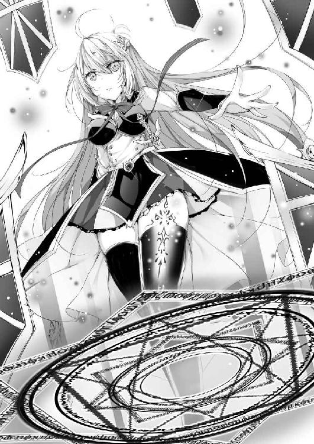
「何それ、防御系の魔法？」
ヴァンテが興味深そうに、銀色のマジックシールドをちょんとつついた。
「あまり触らない方がいいわよ。敵意を感じ取ったら、自動で反撃するようになっているから。ほら、こんな風に」
アイラが頭上に視線を向けて注意を促すと同時に、マジックシールドが一つ勢いよく飛んでいく。
すぐさま、「ぎゃん」という鈍い悲鳴と共に、大蝙蝠が地面に頭から落ちてきた。
「へぇ便利なもんだね。こんなのがあるなら、最初から使えばいいのに」
ヴァンテが再びマジックシールドをつつく。
「これを使えば、そりゃ鉄壁の護りだけど、その分魔力の消費が激しいのよ。展開している間は常に私自身の魔力を使っているの」
「あら、周囲の魔力素子を使っているのではないのですね」
シャルティアーナが「ふむ」とマジックシールドを観察する。
「護りというのは安定性が第一よ。周囲の魔力素子はその分布がまばらになっていることもあるし、戦っている最中に魔力素子が薄いからマジックシールドが消えた、なんてことになったら困るでしょう。その点自身の魔力を使っていれば、どれくらいの間展開出来るかもおおよそわかるから、不確定な要素を戦略に組み込まなくて良くなるわ」
そう話している間にも、マジックシールドは何度も飛んでいき、その度に魔物の悲鳴が洞窟内にこだました。
「よく自動迎撃なんて難しそうな術式が組めましたね」
ベルルルッティエが尊敬の眼差しをアイラに向ける。
アイラと同じようなマジックシールドを展開するだけなら、魔法をある程度学んだ者であれば可能だろう。
しかし、その先の挙動は完全にアイラのオリジナルであるはずだった。
「これは、我がガーディアン家研究の賜物ね。人でも魔物でも、何かを考えたとき、それは普通では感知出来ないけれど、確実に信号として微弱ながらも外に漏れ出しているのよ。それを感知して反撃しているというわけね。一流の剣士は相手の殺気を感じ取れるというでしょう？ それを勘で終わらせるのではなく、どういう理屈で感じ取っているのか実証したのがうちの研究というわけ」
「すごいです。そんなことが出来るなんて知りませんでした」
「まあ、やり方に関しては秘中の秘だけどね」
「うーん、面白そうだから、ちょっと試してみてもいい？」
ヴァンテがニヤリと笑みを浮かべて拳を打ち合わせた。
「はあ？」
「本当にこっちの殺気を感じとっているのか確認してみたいじゃない」
「もー、魔力を消費するから馬鹿なことはしないで欲しいのだけど」
「いいから、いいから」
止めても無駄なようで、ヴァンテはすっかりやる気になっていた。背中に背負っていた剣の束を地面に下ろし、ステップを刻みながら拳を何度も素振りする。
「無駄だっていうのに。......あーもうっわかったわ。言っておくけど、攻撃してくるなら手加減はできないわよ」
「いいよ、本気でやってよ。こっちも本気で突破してみせるから」
「まったく......それなら私が勝ったら、今後一切ここでは私の言うことを聞いて貰いますからね」
「おっけー、おっけー」
面倒なことに変わりないが、これでヴァンテに首輪をつけることができるなら悪くないか。アイラはそう考え、仕方なくヴァンテと対峙する。
「いつでもかかっていらっしゃい。私の体に指先でも触れることができたら貴女の勝ちでいいわよ」
「そいつはなかなかの自信じゃないっ」
言うや否や、ヴァンテがマジックシールドの一つに狙いを定めて拳を繰り出す。
その気迫を敏感に察知し、シールド全てがヴァンテに向かって飛来する。
「うわっ、全部来るのっ！？」
ヴァンテは最初に狙いを定めた一つを拳ではじき飛ばしたものの、他のシールド全てが飛んできたのは予想外だったようで、即座にバックステップで回避する。
危機一髪といったところで、それまでヴァンテがいた地面が、襲いかかってきたシールドで無残にも抉られていた。
「うーん、なかなかやるなぁ」
「もう今のでわかったわ。貴女じゃ私の相手にならない。怪我をしないうちに止めて貰いたいのだけど」
アイラはウンザリしたようにため息をついた。
「いやいや、まだこれからだって。今のは様子見。それに怪我をしたってベルに直して貰えばいいんだから、ねっ」
ヴァンテがベルルルッティエにウィンクしてみせる。
「は、はあ。そ、それはそうですけど、あまりわたしの回復はお勧めしないというか......」
「よーし、じゃあもう一回だ」
ベルルルッティエの言葉は聞かず、ヴァンテは再度アイラに向かって突進していく。
途端にシールドも反応し、ヴァンテを迎え撃つ。
「とりゃああああぁっ！」
今度はヴァンテの反応も鋭かった。襲いかかるシールドを一つ一つ確実に打ち返していた。打ち返されたシールドは、ヴァンテのバカ力で遙か彼方まで吹き飛んでいく。それを七度繰り返し、アイラを守るシールド全てがなくなると同時に、ヴァンテは鋭く踏み込んだ。腰をねじり込み、必殺の一撃をアイラのがら空きになったボディに――もう完全にシールドを試すという目的から外れるほどの力強い一撃が打ち込まれる。
――誰もがそう思った瞬間。
アイラとヴァンテの間に、七つのマジックシールドが再び現れたのだ。
「んなっ」
驚きのあまり、ヴァンテの体勢が崩れる。
その隙を、完璧に編まれた術式が見逃すはずがない。
七つのマジックシールド全てが、容赦なくヴァンテに襲いかかった。
「くっそーーーぉっ」
必死に応戦するヴァンテだったが、崩れた体制では三つを弾き返すので精一杯だった。
残り四つのシールドが、ヴァンテの体を連続で打ち付ける。
「ぐはっ」
ヴァンテの体が中に浮いた。その瞬間、シールドは地面に叩き付ける挙動へと変化する。
「ぐががががっ」
地面に落ちたヴァンテの背中に、復活したシールドも合わせた七つのシールドが降り注ぐ。徹底的にやるその挙動からは、アイラの容赦のなさが伺えた。
一瞬にしてヴァンテの背中は痣だらけになり、見るも無惨な姿になっていた。
ぴくりとも動かなくなったヴァンテは、完全に戦意を喪失したのか、シールドも攻撃を止め、アイラの周囲へと戻っていく。
「だから言ったでしょう鉄壁だって」
動かなくなったヴァンテの頭をちょんちょんと突きながら、アイラは生きているのを確認した。
気付けにと頭に水を掛けてやると、
「うぅぅうぅうう」
謎のうめき声を出しながら、ヴァンテは意識を取り戻した。
「な、何さあれ」
ヴァンテは背中を押さえながら地面に座り込むと、恨みがましくアイラの周囲を廻っている七つのシールドを睨み付けた。
「再生したことを言っているの？ そりゃ当然よ。これは基本的には私を守る盾なのだから、私に危害が及ぶと判断したら、一番遠くにあるシールドが消えて、新たに生成されるようにしてあるに決まっているわ」
「ううむ......」
ヴァンテは頬に拳を当てて考え込む。
「攻略法を考えているのかもしれないけど、無駄無駄。貴女の動きではまず突破することは不可能よ。それよりも、立ち上がれないくらいのダメージを受けているのでしょう？ ベル、回復してあげられるかしら」
「は、はい。大丈夫だと思いますけど、本当にいいんですね」
ベルルルッティエが恐る恐るヴァンテの背後に近づく。
これでベルルルッティエの回復方法も見ることができるし、ヴァンテも大人しくさせることができたし、一石二鳥だわ、とアイラは思った。
「いやいや、あんなのまだあたしの本気じゃないからね。だって武器使ってないし、魔法も使ってないし」
ヴァンテはよほど悔しかったのか、まだ恨めしそうにアイラのシールドを睨み付けていた。
「どんな言い訳しようとも、貴女は私と取り決めた勝負方法で負けた。それはちゃんと認めなさい」
「うう、わかってるよ」
ようやく敗北を認める気になったのか、ヴァンテは肩の力を抜いて、ベルルルッティエに背中を見せた。
「ベル、お願い。直してくれる？」
「わ、わかりました。その、痛くないはずですし、ちゃんと綺麗に直りますから怒らないで下さいね」
「はへ？」
ベルルルッティエのおかしな言い方に、ヴァンテは気の抜けた返事をした。
そんなヴァンテにお構いなしに――
「それじゃあ行きますっ」
ベルルルッティエがヴァンテの背中に向かって拳を構える。
「えっえっ、何？」
「結構酷くやられてますからね。これはかなり気合いを入れないとダメそうです」
足を広く開き、地面をしっかりと踏みしめ、そしてヴァンテの背中に狙いをすまし――それは、先ほどヴァンテがアイラの盾に打ち付けていた拳よりも速く、力強く、まるで超一流の武闘家の一撃がごとく――ベルルルッティエは、強烈な右ストレートをヴァンテの背中に放ったのだった。
「がはぁっ」
肺の中の空気を全て吐き出すような悲鳴を上げながら、ヴァンテが地面を転がる。その姿はまるでボロぞうきんのよう......。
「ちょ、ちょっと大丈夫なの？」
さすがのアイラもこれは予想外だったようで、思わずヴァンテの心配をしてしまう。
「押忍っ」
ベルルルッティエがお腹の前あたりで、拳を交差させて息を吐いた。
「いいいいいっ」
ヴァンテが背中を押さえながら立ち上がる。
背骨が折れたか。いや、それなら立ち上がることなど不可能なはず。
アイラ達の前でヴァンテは普通に背筋を伸ばし――
「痛くない」
ケロッとした表情で言ったのだった。
‡‡‡‡
「つまりは、殴る威力によって、回復量が決まると」
「はい、そうなんです」
第二区画最奥――
つまりは、第三区画手前のセーフティゾーンで、アイラ達は休憩を取っていた。
第二区画と第三区画の間には、洞窟の通路を完全に塞ぐ形で扉が設置され、さらにその周囲には魔法石による結界が張られている。その結界は魔物の侵入を阻む強固なものであり、実習中も休憩場所としてよく利用されていた。そこへ、アイラ達はヴァンテの体がなんともなっていないのを確認すると、一目散に駆け込んだのだ。
あのアイラとヴァンテの決闘で、洞窟内の魔物が刺激されたのか、一気に襲いかかってくる数が増え、とてもじゃないが悠長に話しているいとまがなかったのだ。
安全を確保し、食料と水を少しだけ摂りながら、アイラ達は改めてお互いの力を確認し合っていた。
「うーん、にわかには信じがたいけど、確かに目の前でヴァンテの傷は癒えたものね」
ヴァンテとの決着が付き、自分が優位に立ったことで、アイラはヴァンテを名前で呼ぶようになっていた。
「わたしも自分ではこの力の説明が出来ないのですけど、生まれてからずっとこうなんです」
「詠唱もなしに魔法を発動させるだなんて――いえ、魔法かどうかすらわからないのね」
「はい」
ベルルルッティエが不安そうな顔で頷く。
「ベル、そんな顔はするものではないわ。貴女の力はとても素晴らしい物よ。だってヴァンテのあの傷は、私も回復魔法は嗜んでいるけど、私では完全に回復させることは出来なかったわ。だけどベルはたった一度殴っただけで、傷一つ無い状態に治してしまった。それは誇ってもいいことよ」
「そうでしょうか」
「ええ、もちろんよ」
アイラは優しくベルルルッティエの頭を撫でた。
「そうそう、いきなり殴られたときはビックリしたけど、まったく痛くなかったし、むしろ気持ちよかったくらいで」
ヴァンテは不思議そうに自分の背中を触ってみた。
もちろん傷一つなく、痛みすらない。
他人と違う力を持つということは、とても不安なことだ。アイラも、その気持ちは少しわかる。アイラもガーディアン家歴代最高の力を持っていると称えられ、その力を持てあましていた時期があったものだ。
「例えば、これくらいの傷なら、どれくらいの力で殴れば直せるのかしら」
そう言って、アイラはナイフを取り出し、自分の指先を少し切ってみせる。
「だ、ダメです。どんな理由があろうとも、自分の体をみだりに傷つけるような真似はしてはいけません」
聖職者らしいお説教を受けてしまい、アイラはしまったと少し後悔した。クレリックの前で自傷行為をするのは、聖職者を侮辱する行為になってしまうのだ。
「ごめんなさい。でも、どうしても自分でベルの力を感じてみたかったの」
「仕方ありませんね」
瞳を閉じて、小さくため息を吐きながら、ベルルルッティエはアイラの手首を掴み、傷口を見た。
「これなら、軽く弾くだけで直りますね」
そう言って、ベルルルッティエはアイラの指先を人差し指でパチンと弾いて見せた。途端に――傷口が一瞬でふさがり、まるで何事もなかったかのように、アイラの指先は元に戻った。
「凄いわね。こんな一瞬で、詠唱も必要ないなんて」
不思議そうに、アイラは自分の指先をマジマジと見つめる。
「これ、どの程度の傷まで治せるのかしら」
「そうですね。今では死んでいなければ多分治せます」
「うそっ、そんな凄いの？」
回復魔法は、相手の自然治癒力を大幅に増幅させるという認識が一般的だ。それ故、瀕死の状態だと自然治癒力が失われ、回復魔法が効かないということもある。
その状態から回復させることができるのは、回復魔法の神髄を極めたとされる大司祭クラスの力が必要で、とてもじゃないが学生でそこまでの力を発揮するのは不可能だ。
「病気なんかはどうなの？ 風邪は治せるの？ 毒とか麻痺とかは？」
「そういうのも直せます。原理は、まったくわからないんですけど」
「うーん、それは凄いわね」
もう一度、アイラは感慨深げに呟いた。
「そんな力今まで聞いたことも見たこともないわ。ある意味私よりも凄い力を持っているってことよね」
アイラはしきりに感心していた。
「とはいえ、自分の力が一体どういうものなのか、まったく理解できていないのはダメね。そこがベルの問題ということでしょうね」
「そう......だと思います」
「その力がなんなのか、この探索で少しでも解明できれば良いのだけど、うーん難しそうねぇ」
何せ、完全に未知の力なのだ。解明の糸口すら掴めるかどうか......。
「いいわ。すぐには無理でしょうし、今回の試験ではなんとかごまかす方法を考えるとして、その後私の家へこない？ ベルがよければガーディアン家がその力の解明に協力するけど」
「本当ですか？」
「うちの研究施設の力を持ってすれば、なんらかの進展は得られるはずよ」
「是非お願いします。わたし、この力を持っていること自体は凄く嬉しいんです。どんな傷でもすぐに治せて――でも、その為に殴らないといけないのが心苦しくて――だから、この力のことはあまり他の人には話したことがないんです。知っているのは先生と、友達数名くらいで」
「そうなの」
偉大な力ではあるけれど、それを行使する方法があまりにも異端過ぎる。
いくらどんな傷でも治せるといっても、全力で殴られることを良しとする人は少ないだろう。嘘に決まっていると思われるのが落ちだ。
「よしよし、ベルは優しいわね。きっとそんな優しいベルに、神様が過剰に力を分け与えてしまったのかもしれないわね」
「そうだといいんですけどね」
えへへ、とベルは幾分気持ちが和らいだのか、笑顔を見せた。
「よし、ベルの為にもこの試験は確実にクリアーしないといけないわね」
そう言ってアイラは立ち上がる。
「ここから先は未知の領域。みんな気合い入れていくわよっ」
意気込むアイラの激にベルが「おーっ」と応える。
「ま、ベルの回復があるならなんとかなりそうかな」
ヴァンテがボロ剣の束を背負う。
「みなさん頑張って下さい。わたくしは後ろをついて行きながら応援しますので」
シャルティアーナが、組んだ両腕の上に豊満な胸を乗せながら微笑む。
四人の意志が一つ？ になったのを確認して、アイラが第二区画と第三区画を隔てる物理防壁に近づいていく。
それは完全に洞窟の通路を塞ぐ形で作られており、ここを通らなければ洞窟の奥へは進むことが出来ないようになっていた。扉には鍵穴のない錠が掛けられており、それを解錠するためには、特定のキーワードを言わなければならない。
今回、アイラ達には特別にそのキーワードが教えられていた。
「それじゃあ開けるわ」
アイラが大きく息を吸い込み、その解錠のキーワードを告げる。
「我が呼びかけに応え、その扉を我に開き給え――クリミネルボルト！」
瞬間、扉が緑色に発光し、音もなく錠が消え去る。
「さあ、行きましょうか」
アイラが扉を押すと、それはすんなりと開くことができた。魔法で力を入れなくても動くようにしてあるのだ。
四人は恐る恐る扉をくぐり、未だ学院の生徒では立ち入ったことない第三区画に足を踏み入れたのだった。
第三区画へ足を踏み入れると、別世界へ放り込まれたかのような感覚を覚えた。
空気が――景色が、まるでそれまでと違ったのだ。
洞窟の奥へと続く道は闇に閉ざされ、まるでアイラ達の行く手を遮っているかのように感じる。
それを嫌ったわけではないが、アイラはすぐに光の魔法を使う。
「我が呼び声に応えよリヒト。――我灯すは宇宙より降り注ぎし永遠の光――シュテルネンリヒトッ！」
詠唱が終わると、アイラの頭上に星の光のような優しい灯火が現れた。
第二区画までは洞窟の上部から光が差し込む部分がいくつもあり、光を灯す魔法を使わなくても、周囲を見渡せる程度には明るかったのだ。
しかし、第三区画は光の差し込む隙間が一切無いのか、完全に闇に閉ざされていた。見えるところといえば、今開かれた扉から差し込む光の届く範囲のみ。
洞窟の壁には、じめじめとした苔がびっしりと生え。湿気も多いのか、壁も地面も雨が降ったかのようにしっとりと濡れている。
空気は――一応はあるようで、呼吸に問題をきたすようなことはなかった。というよりも、アイラ達の背後から空気がどんどん中へと流れ込んでいるようで、最初は髪を押さえなければならないほどだった。空気がこれだけ流動するということは、洞窟の奥は行き止まりというわけではなく、最終的にはどこか外へと繋がっているのかもしれないが、それを確かめるには第十区画より先へいかなければならないだろう。
もっともアイラ達の目的は、第十区画にあるという試験合格の証であるので、そこまで確かめる気はなかったが。
「油断していると、滑って転んでしまいそうね」
先頭に立つアイラが注意を促すと、それを合図にでもしたかのように――
「ひゃっ」
という小さな悲鳴が後ろから聞こえ、振り向けばベルルルッティエが見事に尻餅をついていた。
「うふふ、もうベルったら、汚れないようにと短いスカートを穿いてきたのに、まったく意味がないじゃない」
アイラが手を差し伸べて引き起こすと、ベルルルッティエは気持ち悪そうに濡れたお尻を払う。
「やっぱりクレリックの子って白が多いのかしら」
アイラがベルルルッティエのスカートの中を思い出しながら、笑みを浮かべる。
「もうっ、アイラさん今のは忘れて下さい」
ベルルルッティエは恥ずかしそうに頬を染めながら、スカートの前を押さえた。
「うふふ、もう私の脳裏に焼き付けてしまったから忘れるのは無理よ」
「うぅ、アイラさんの意地悪っ」
ぽかぽかぽかと、ベルルルッティエがアイラの胸元を叩く。
途端に――
「あっ、ちょっ、これ何っ？ き、気持ちよくて癒やされるっ」
アイラは体中にじんわりと広がる、今まで感じたことのない快楽のような、不思議な心地よい感覚に包まれた。
「あっ、ダメっ。ベルごめんなさい。私が悪かったから、謝るからっ」
「本当ですか？」
「本当っ、本当だからっ」
その言葉を聞いて、ベルルルッティエが叩くのを止めると、まだ胸元にその心地よい感覚が続いていたが、とりあえずは収まった。
「な、何かしら今の」
生まれてこの方味わったことのなかった感覚に、アイラは混乱する。
「だから言ったじゃないですか。叩くと回復するって」
「えっ、それってベルが意識して叩いたときだけじゃなくて、常にそれなの？」
「そうですよ」
「ちょっとそれは予想外だったわね。でも、うーん......相手を傷つけるワケじゃないし、困ることはないのかしら」
「そうですね......人を傷つけようと思ったことはありませんから」
「そう......よねぇ」
あまりにも不思議なベルルルッティエの力を改めて知り、アイラは酷く興味を引かれたのだった。
「......あのさ、もう進んでいいかな。いちゃつきたいならここに置いていくけど」
「そうですわ。まったく、ちょっと暗がりに転がり込んだ途端これですもの。今は追試験の真っ最中だということを忘れて貰っては困りますわ」
それまでアイラとベルのやり取りを黙って見ていたヴァンテとシャルティアーナが、ようやく終わったのかとため息を吐く。
「アイラって、なーんかベルにだけ優しくない？」
ヴァンテがジト目でアイラとベルルルッティエを見る。
「そうですわね。いつの間にそんな仲になったのか教えて頂きたいところですわ」
シャルティアーナが、重たそうな胸を両腕の上に乗せて肩をすくめる。
「別にベルを特別扱いしているわけではないわよ。確かに、今まで私の周りにはいなかったタイプだから、ちょっと気になっているというのはあるけど。って何言わせるのよ。ああもうっ、わかっているわよ、もう大丈夫だから先へ進みましょう」
アイラは誤魔化すようにして大声で言うと、先頭に立って歩き出す。
「ベル、濡れてしまって気持ち悪いとは思うけど、野営できるようになるまではそのままで我慢して頂戴ね」
「わかってます、これくらい平気ですから」
ベルルルッティエの力強い返事を聞き、アイラは気を引き締めて前方へ注意を向ける。
第三区画は、しばらくは狭い道が続いた。
頭上はアイラが手を伸ばしても届かないくらいあったが、横は二人が並べるかどうかというところだ。襲われれば戦いにくそうであったが、この狭い通路に入ってこれる魔物ならアイラにとっては格好の獲物だ。
アイラのズィーヴェン・シルトは多対一用に作り込んだ魔法だったが、もちろん一対一が不得意なわけではなく、相手をする数が減れば減るほど無敵の防御を誇るようになる。それは少し前にヴァンテが証明した通りである。
いつ襲われても対処できるように、アイラは周囲に気を配っていたが、しばらくは魔物の影すら見ることがなかった。
「いきなり魔物の群れにでも囲まれるかと思ってたけど、何もいないね」
ヴァンテが無警戒に欠伸をしながらアイラに声をかける。
「そうね。でも、私たちにとっては第三区画の始まりだけど、ここに生息している魔物にしてみたらただの行き止まりの上、進入を阻む結界があるのだから近寄りたくないのじゃないかしら」
自分の推論で応えると、ヴァンテは「なるほど」と頷いた。
「今は後ろから襲われることはないでしょうけど、ちゃんと警戒だけはしてよ」
「はいよ、わかってますって」
本当に大丈夫かしら、とアイラは思ったが、ヴァンテに期待しているのは偵察としての役割だからと、それ以上は何も言わなかった。
「水の流れる音がします」
それにいち早く気がついたのは、ベルルルッティエであった。
全員が足を止め、耳を澄ませてみる。
すると、確かにサラサラと、洞窟の中を流れているであろう水の音が聞こえてきた。
それ自体は朗報だった。水の確保が容易に出来るというのは、探索において何よりも重要なことだ。
「地図は合っていたようですわね」
「そうね。でも、嫌な音も聞こえるわ」
より慎重に音を聞き分けながら、アイラはシャルティアーナに告げる。
アイラの耳には、水の流れる音だけではなく、バシャバシャと、何か水を打つような音も聞こえていたのだ。
「魔物がいると？」
シャルティアーナも耳に両手を当て、音を拾おうとする。
「いると思うわ。いいえ、いると思っておかないと不意打ちを食らうことになるわよ」
アイラは少し考え、
「ヴァンテ、貴女は私のすぐ後ろに来て頂戴。もうすぐ広い空間に出ると思うから、もしそこで襲われるようなことがあれば、ベルとシャルを通路に退避させて守ってあげて」
「いいよ」
ヴァンテが右の拳を左の手の平に打ち合わせて、口元に笑みを浮かべる。
「さて、何がでるのかしら」
アイラが、通路の終わりにさしかかったところで一度足を止める。目の前にはゆるやかな曲がり角があり、そのすぐ向こうから水の流れる音と、何かが水辺を移動している音が聞こえていた。
――その音が、突然アイラ達の方へ向かってくる。
「バレたわ。私が出るから三人は通路で防衛よ」
「アイラの上で光ってるやつのせいで見つかったんだと思う」
ヴァンテがベルルルッティエとシャルティアーナを戻らせて、通路の出口で待ち構える。
「それは、気がつかなかったわ」
アイラが舌打ちをしながら飛び出すと、それはすぐに襲ってきた。
アイラの身長を超えるほどの巨大なオオトカゲが三匹。鋭そうな爪を持ち、巨大な牙を口元から覗かせている。凶暴そうではあるが、それだけなら第二区画まででも似たようなのはいた。
しかし、これが今まで見たことのあるオオトカゲと違うのは、頭が二つあり、尻尾の先がトゲの付いた鉄球のようになっているところであった。
「それはディプロザールです。尻尾の攻撃に注意して下さい。当たれば鉄の鎧すら貫通するはずです」
通路から少しだけ顔を覗かせたシャルティアーナが、魔物の姿を確認して叫んだ。
「あら、シャルってば博識じゃない。よく知っていたわね」
油断なくアイラは構えながら、声だけを返す。
ディプロザールは、すぐには襲ってこなかった。
一定の距離まで近づくと、尻尾を地面に何度も打ち付け、威嚇しているようであった。威嚇、といっても、シャルティアーナが言ったように鉄の鎧すら貫通する威力があるので、地面がどんどん抉られていく。
「ぞっとしない威力ね」
アイラはむろん、ディプロザールと対峙するのは初めてである。名前すら知らなかったくらいだ。しかし、臆するという言葉はアイラの辞書にはない。
「まあ随分と強そうだけれど、こんな――貴方たちにしてみたら最奥の区間に追いやられているということは、実はたいしたことないのでしょう？」
アイラが一匹に向かって駆ける。
それを察知し、ディプロザールが即座に体を反転させ、尻尾を振り上げた。
「予想通りってところね」
落胆の色さえ見せながら、アイラはマジックシールドを操作して、尻尾を振り下ろす動作に合せて横から叩きつけた。すると、簡単に尻尾の軌道は逸れ、地面のみを打ち付ける。
「叩きつける力は強いけど、やっぱり横からの力には弱いのね。しかも、打ち付ける瞬間を見ていないものだから、一度躱されたら無防備すぎるわ」
そう言って、アイラはディプロザールの横っ腹を蹴り上げた。
何が起きたのかわからず、ディプロザールがズシャァと這いずりながら逃げる。
「それから、基本的に上からの攻撃に弱そうよね」
逃げるディプロザールに追い打ちを掛けるかのように、アイラはマジックシールドを頭上から一気にディプロザールの頭に向かって降らせた。
「あら、これって貴方たちのやっていることと同じね」
狙いは違わず。ディプロザールはまともな反応すら出来ず、二つの頭を強打され失神する。
それをもう二度繰り返し、アイラは汗一つかく事なく三匹を撃退して見せた。
「トドメを刺してもいいけど、この辺りに血をまき散らすと変な魔物が寄ってきそうで嫌ね。この程度の相手ならなんとでもなりそうだし、放っておきますか」
アイラは三匹が失神しているのを確かめて、ヴァンテ達に出てくるように合図を送る。
「なかなかやるじゃん」
ヴァンテは素直にアイラに賞賛の言葉をかけた。
「ディプロザールは魔物と言うよりは、独自に進化した爬虫類って感じね。知能も低そうだったし、落ち着いて対処すれば恐れることはないわ」
第三区画はどうやらディプロザールのような、魔物ではないモノ達の生息域のようで、時々大きな物音を鳴らせば怖がって身を隠すモノが多かった。逆にそれにつられて出てくるようなのもいたが、それはアイラが先制して顔面にマジックシールドでもぶつけてやれば驚いて逃げ出すモノばかりだった。
一般の学院の生徒であれば、おそらく適切な対処もできずに逃げ惑うか、為す術もなく棘の付いた尻尾の餌食になっていただろうが、そこはさすが学年主席というとろだろう。アイラにとってはまだ全力を出すほどの相手ではなかった。
‡‡‡‡
「第三区画は問題なく突破出来たみたいね」
第三区画の終わりは、地下水の流れと、アイラ達の進む道が分かれる場所であった。
そこからはアイラ達は少しばかりの崖を登り、水辺から離れる事になる。水を一旦補充し、二メイル程度の高さまで上り、またしても狭い通路を進み始める。
「天井が低いから注意しなさい。頭を打ったりしないようにね」
アイラが若干腰を屈めながら、頭上に飛び出る岩の多さに辟易して声をあげる。
頭を打ち付けてもベルルルッティエに治して貰えるが、そんなことで手を煩わせたくはない。
他の三人も、特にシャルティアーナが一番背が高いので、かなり気を使いながらアイラについて行く。
ほどなくして、徐々に天井が高くなっていき、第四区画と呼ばれる開けた場所へと到達した。
そこは、それまで沢山いたディプロザール達、水辺を好んで棲息していたモノ達の姿はすっかりなりを潜め、今度は怪しげな瘴気とでもいえるような、そこにいるだけで息苦しさを覚えるような空気が流れていた。
「あまり長居はしたくないわね」
嫌な気配を感じてアイラが眉をひそめる。
見廻した限りでは魔物の姿は確認出来ない。
しかし、確実に何かはいる。マジックシールドが、時折殺気を感じてかピクリと動くのだ。実際に飛んでいかないという事は、すぐに殺気を消しているという事であり、いくらか知能があることを伺わせる。
最大限の注意を払いながら、アイラ達は奥へと向かって進む。
しばらくは何も起きなかった。
アイラ達の足音と、天井から落ちる水滴が、地面を打つ音だけが洞窟内に響く。
四人は無言のまま、第四区画のちょうど中間辺りまで来ていた。
「このまま何も起きなければいいですわね」
シャルティアーナが少し疲れてきたのか、肩で息を吐き、胸を上下に揺らして呟く。
「そうですね。足下も悪いですし。宜しければ叩いて差し上げましょうか？」
ベルルルッティエが、もちろん善意でシャルティアーナの心配をする。
「たっ......！」
シャルティアーナが目を剥いてベルルルッティエに何かを言おうとして、それが回復の事だと悟って一度口を閉じる。
「いえ、遠慮致しますわ。そこまでして頂くほどのことではありませんから」
おほほ、とシャルティアーナが冷や汗を一滴垂らしながら断る。
いくら回復して貰えるとわかっていても、叩かれるという行為は遠慮したいと思うのが普通だ。
「いいじゃない、一回叩いて貰いなさいよ。結構癖になるわよ」
「アイラさんのように、新たな性癖を開発するつもりはありませんので」
アイラの言葉を、シャルティアーナはぴしゃりと打ち落とす。
「別に快感になんてなってないわよっ。にしても、確かに歩きにくくなって――」
アイラはぞくりとして、足下を見た。
いつの間にか足下は岩肌が見えないほどに砂が敷き詰められ、軽く足を取られるほどになっていたのだ。
「しまった。みんな集まって！」
アイラが叫ぶと同時に、砂が一斉に動いた。いや、動くなどという生やさしいものではない。一斉に隆起し、まるで巨人の上半身を思わせる砂細工人形となり、アイラ達に襲いかかってきたのだ。
巨大な砂の手の平が、アイラ達を潰しにくる。
「シルト、シルト、シルトッ！――我紡ぐは連鎖の障壁、我が極盾の前に汝、己が無力を知るだろう。グロース・ヴァントッ！」
刹那に展開された魔法障壁。
同時に大質量の砂の塊が、波のようにアイラ達を包み込む。
......。
............。
..................。
砂の波が収まると、アイラ達のいた辺りに、発光する何かが浮かび上がってきた。
それはアイラの作り出した、三十六枚のマジックシールドであった。
盾はアイラ達の周りをドーム状に覆い、高速で周回し、敵の攻撃を防いでいたのだ。
「ぶはっ、ぎりぎり間に合ったわね」
砂煙にむせながら、アイラが周囲を見廻す。
「あー、もうっ。誇りまみれ」
ヴァンテも口元を手で隠しながら毒づく。
「濡れたところに砂がひっついちゃってます～」
ベルルルッティエが涙声を上げた。
「まだ油断しない方がよろしいのでは？」
シャルティアーナが、胸元に溜まった砂を落としながら言う。
「いいえ、とりあえず今のやつは倒しているわ」
そう言って、アイラが地面に倒れている黒い物体を指さした。
「あれがこの砂を操っていた正体ってところね。ズィーヴェン・シルトで展開していた銀魔の盾が、殺意に反応して襲いかかってくると同時に迎撃していたわ」
「相変わらずその盾優秀だなぁ」
ヴァンテがマジックシールドを軽く殴ると、盾が同じくらいの力で反撃してきた。
「むむむむむっ」
ヴァンテが少しムキになりかける。
「ちょっと止めてよ。今のでかなり魔力を消費したんだから余計な事はさせないで頂戴」
「わかってるって」
そう言って、ヴァンテはこの砂を操っていたという黒い物体を拾い上げた。
それは手の平よりも少し大きく、頭と胴が同じくらいの大きさで、黒い尻尾と羽の生えた不気味な生物だった。
「それはクラインデーモンと呼ばれている魔物ですわ。この付近では滅多に見かけないはずの魔物ですわね」
シャルティアーナが、ヴァンテのつまみ上げたクラインデーモンを見て、眉をひそめる。
「シャル、よくそんなこと知っているわね。私でも知らないってのに」
「ええ、実家にある魔物図鑑に確か載っていましたので」
「そうなの？ まあ学院が管理をしているのだし、未知の魔物がいるわけないか――来るっ！」
再び、危険を察知したアイラが天井へ目を向ける。
ギーッ！
耳障りな鳴き声と共に、クラインデーモンが二十体以上、天井から襲いかかってくる。
ギーッ！
再び鳴くと、口を大きく開け――一斉に炎の魔法――フランメを打ち出してきた。
「生意気に、そんな魔法も使えるのね」
魔物の使う魔法は、アイラ達人間の使う魔法とは体系が異なる。
術式を刻印しているのではなく、進化の中で感覚的に魔力素子に干渉して火や砂を操る事が出来るようになっているのだ。
だが、それゆえに複雑な制御はできず、ごく単純な動きしか出来ない事が多い。
「アイラさん気をつけてっ」
「問題ないわっ」
アイラはベルルルッティエにウィンクしてみせる余裕すらあった。
グロース・ヴァントを解除し、ズィーベン・シルトの制御に集中する。
無数のフランメが降り注ぐ中、アイラは冷静に迎撃を開始した。
基本的にズィーベン・シルトに任せていれば問題はないが、迎撃する細かい優先順位を都度指示した方が、より速く殲滅できるようになる。
フランメはマジックシールドに触れると即座に霧散し、跡形もなく消える。
それを見て焦ったクラインデーモンの顔面に、マジックシールドが襲いかかり、防御させる暇も与えず潰していく。
しばらくは、ボンボンっと、フランメが消滅する音が鳴り響いていたが、やがて少しずつ音が減り、何も聞こえなくなった頃には全てのクラインデーモンが頭を潰された状態で地面に転がっていた。
「ふうっ」
アイラは肺に溜まっていた空気を一度全て吐き出した。
「魔法を使ってくるのには驚いたけど、あまり賢くなくてよかったわ」
「アイラさん凄いです」
ベルルルッティエが尊敬の眼差しをアイラに送る。
「あんなのわたしじゃ絶対に対処出来ませんでした。考えたくもないですけど、わたしだったら初めの砂に押しつぶされるか、炎に焼かれるかしていたでしょう」
「大丈夫よ。そんなことには絶対にならない。だって、私が守ってあげるもの」
アイラは、ベルルルッティエの額に付いた砂を払いながら微笑みかける。
守るべき存在がいれば、それが力になる。父の言っていた言葉の意味がよく理解できる。
ベルルルッティエのような、弱い存在を守ってあげることこそが、ガーディアン家に生まれた者の役目であり、幸せなのだと。
「アイラさん......」
「ベル......」
今にもその場で抱擁し合いそうな二人であったが、
「騒ぎにつられて他の魔物が来るかもしれない。先を急ごう」
ヴァンテの言葉に現実に戻されたのだった。
第四区画は、クラインデーモンの他にも、意志を持った蔦。巨大な角を持った鼠、雷を纏ったような蛇の大群、サメのような顔を持った四足歩行のカバと、恐るべき魔物が潜んでいた。
それらは――蛇に関しては全員が生理的に受け付けないとの理由で戦いを回避し全力で逃走したが、他はアイラ一人で戦い、傷一つ負う事なく戦いに勝利していた。
「なんで学院の管理する洞窟にあんな凶暴な魔物が棲んでいるのよ」
さすがのアイラも疲れてきたのか、愚痴を言う回数が多くなってきた。
今まで見た事も聞いた事もない魔物との戦いは、いくら優秀なマジックシールドをもってしても、楽なものではなかった。攻撃方法が容易に想像できる相手なら、対処も簡単にできるが、第四区画に棲んでいる魔物は、一癖も二癖もあるものばかり。オートガードに任せていては対処が遅れる場合も出てくるようになっていたのだ。
「アイラさん......あの、よろしければお殴り致しましょうか」
ベルルルッティエが気を使って申し出るが、その言葉を聞くだけでごっそりと体力を奪われるようであった。
むろん、体力を回復してくるという意味なのだが。
だが、天使のような可愛らしいベルルルッティエの口から、お殴りしましょうか、なんていう単語が出てくるのだ。
アイラは頭が痛くなってくるのを感じた。
しかし、体力が実際にかなり減っているのは事実だ。洞窟へ入ってからもうすでに五ジゲン以上は経っている頃だろうか。顔に出す事はないが、足に疲れがかなり来ていた。魔力はというと、実はこちらはなんの問題もなく、よほど洞窟内の魔力素子が濃いのか、心配していたほど魔力は消耗せず、むしろもうグロース・ヴァントを使った分は回復していたのだ。
「そうね、まだ第五区画もあることだし、回復して貰おうかしら。ついでにヴァンテとシャルも回復してあげて頂戴。戦闘していないとはいえ、この足場の悪い道を進んできたのだから、相当疲労しているはずよ」
殴られなければならないというのなら、全員もろともだ。
アイラはニッコリと微笑みながら、ヴァンテとシャルティアーナの腕を掴んだ。
「ちょーい」
「わたくし、まだそんなには疲れておりませんけど」
「あーら、嘘おっしゃい。さっき足の裏をだいぶ気にしていたじゃない。痛いんでしょう？ 足の裏が。疲れているんでしょう？ 息が荒いわよ」
「あ、あの、一応回復ですからね」
「ほら、ベルが傷ついているじゃないの。貴女たち、ベルに回復して貰うのが嫌なの？」
「そ、そういうわけじゃ」
「卑怯ですわ～」
薄暗い洞窟の中に、ヴァンテとシャルティアーナの悲鳴がこだました。
「それじゃあ、行きますね」
「え、ええ。かかっていらっしゃい」
アイラは、今までの戦いでは見せた事のない焦りの表情を浮かべていた。
どんな強敵を目の前にしても、ここまで力んだ事はないし、恐怖を感じた事もなかった。
むろん、これからベルルルッティエがしようとしているのが回復行為だということは重々承知している。
しかし、護りの誉たるガーディアン家の長女として、アイラは今まで攻撃らしい攻撃を受けた事がなかったのだ。
ズィーベン・シルトを展開するだけで、ほぼ全ての攻撃を防ぐ事ができたし、剣技においても一流の腕を持っているので、負けるという事も知らなかった。
そのアイラが無防備なまま殴られなければならないという、生まれて初めての経験をしようとしているのだ。
「はぁっ......はぁっ......」
こんなプレッシャーは今まで感じた事がない。
脂汗がにじみ、息が乱れる。
「あ、あの、そこまで緊張しなくても大丈夫ですので。むしろそうやって体力を消耗されると、余計に殴る威力を上げないといけなくなってしまいます」
ベルルルッティエが申し訳なさそうにしながらも、拳を構える。
「だだ、大丈夫よ。緊張なんてしていないし。ほらさっさとやって頂戴な。ベルに殴られるなら本望よ」
「うーん、ま、いいか。その緊張も、消耗した体力も、すぐに癒やして差し上げます」
ベルルルッティエが腰をひねり、握り込んだ右の拳を「こおぉぉっ」と息を吐きながら後ろに引く。
全然言葉と行動が合っていない。
「行きますね」
「ああ、神様、私はベルのことを信じているのに、自らの肉体を説得することのできないおろっ――」
「せぇえいっ！」
「かっ、がはっーー」
アイラが懺悔をしている最中に、ベルルルッティエは容赦なく拳を打ち込んだ。正拳中段が見事にアイラのみぞおちを打ち抜く。
「ぐっ、い、痛くない。どころか体中に力がみなぎってくる。で、でも――」
ガクーッ、とアイラは地面に膝から崩れ落ちた。
「これは効くわぁ......」
よほど無防備で殴られた事の精神的ショックが大きかったのだろう。アイラは真っ白に燃え尽きていた。
「大丈夫ですか、アイラさん」
慌ててベルルルッティエがアイラの傍に跪き、背中を撫でて心配そうに覗き込む。
「やっぱり、わたしの力おかしいですよね。こんな力でも、誰かの役に立てればと思っていたのですけど、力を消す方法がないのか探した方がいいのかもしれません」
「あっ、違う。違うのよ」
アイラは慌ててベルルルッティエを抱きしめた。
「ごめんなさい。ベルを傷つけてしまったわね。貴女の力はとても素晴らしい物よ。詠唱もなく相手を――」
アイラはさらに力を込めてベルルルッティエを抱きしめた。
「たとえ相手を殴るという行為だったとしても、私をこうして癒やしてくれるのですもの。私はベルにだったら百回でも千回でも殴られたいと思うわ」
「アイラさん」
ベルルルッティエは目に涙を浮かべながらアイラを見つめた。
「貴女の力は誤解されやすいものかもしれない。でも、私が理解しているから。たとえ誰かに非難されようとも、私だけはベルの味方だから、自信を持って相手を殴って差し上げなさい」
「わかりました。わたしの力を必要としている人がいる限り、わたしは殴り続けます」
「ええ、それでいいわ」
もう一度アイラはベルルルッティエを抱き寄せ、頭を優しく撫でてあげた。
「ということで、他の二人も殴って差し上げなさい」
「はーい」
ベルルルッティエが笑顔で立ち上がる。
「ぎゃー、こなくていいからっ」
「わたくしはまだ平気ですから」
ヴァンテとシャルティアーナが抱き合いながら、じりじりとベルルルッティエから遠ざかろうとする。
「大丈夫ですよ～、痛くないですよ～」
ベルルルッティエが拳を握り込みながら二人に近づく。
「ヴァンテはさっき治してもらったのだから怖がる必要はないでしょう」
アイラがヴァンテを叱り飛ばすが――
「わかってるけど精神的な問題なんだよっ。笑顔で殴られるのって怖いんだぞっ」
その気持ちはわかるが、ベルルルッティエ本人に聞かせるなんてデリカシーがなさ過ぎる。
アイラはもう一度叱ろうと口を開こうとしたが、
「大丈夫です、わたしはもう気にしません。だって、わたしにはアイラさんがいますから」
ベルルルッティエは、心の底からの笑顔でアイラに微笑んで見せた。
そして、そのまままずはヴァンテに向かって拳を繰り出す。
「せいっ！」
「こなくそっ」
ただで殴られて堪るかと、ヴァンテがベルルルッティエの手首を掴もうと腕を伸ばす。
ソードクラスの反射神経があれば、クレリッククラスのベルルルッティエの動きを止める事など容易いはず。
だったのだが――
シュッ――
ヴァンテがベルルルッティエの手首を掴んだと確信した瞬間、それは空振りに終わった。
一瞬でベルルルッティエの拳が、直線から弧を描くような軌道変わり、みぞおちではなく脇腹に深々と突き刺さったのだ。
「ぐ、ぐふぅ」
ヴァンテが崩れ落ちる。
「さ、次はシャルティアーナさんです」
「いっやぁああああああーーー」
泣き叫びながら這うようにして逃げようとするシャルティアーナの背中に、ベルルルッティエは容赦なく慈悲の拳を振り下ろしたのだった。
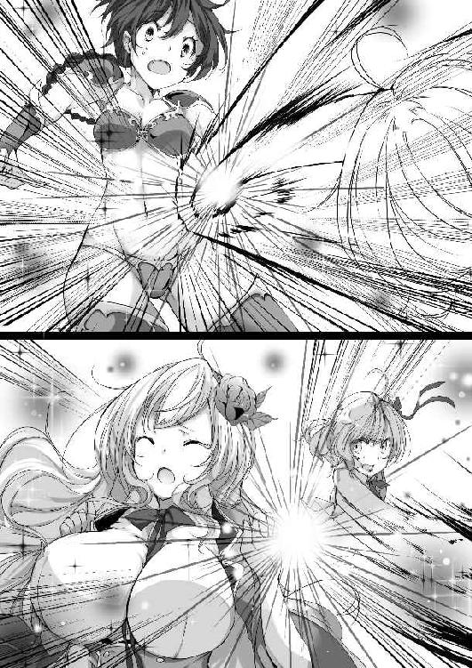
「あーもうっ、おかげで体力全快だよ。このまま第十区画までだって余裕でいけるよ」
ヴァンテが拗ねたような口調で言う。
「それは無理よ。もうすでにかなり時間は経っているし、体力があっても精神的には疲労しているはずよ。睡眠を取らないと判断が鈍ってしまうわ」
アイラ達一行は、ついに第五区画へと足を踏み入れていた。
第五区画は、今までのように比較的歩きやすかった足場とは違い、でこぼことした岩の上を飛ぶようにして移動しなければならなかった。
水脈があるわけではないが、天井からしたたり落ちる水滴が足下に溜まり、水たまりのようになっていたのだ。
濡れる事を気にしなければ水の中を進めばいいのだが、そうしてしまうと靴や衣服が水を吸ってしまい、いざというときに素早く動く事ができないとの判断から、出来るだけ濡れないように移動することにしていた。
足場は四人が乗れるほど大きな物が多かったが、中には一人乗るのがやっとのものもあり、そういった足場をなるべく避けながらアイラ達は奥へと目指す。
第五区画は魔物の数も多くはないようで、毒ガエルや触れた瞬間にこちらを絡め取ろうとしてくる蔦などはあったが、積極的に襲ってくる魔物は大蝙蝠くらいなもので、それらはアイラの銀魔の盾が問答無用で叩き落としていた。
「騎士隊の方達はここまでしか来た事がないのでしたわね」
「そうね」
アイラが視線を送ると、シャルティアーナがそろりそろりと、岩場から岩場へと脚を伸ばしていた。すると、まばゆい太ももが、股の付け根まで惜しげもなく披露される。
シャルティアーナは、ローブの裾を腰までめくり上げて、落ちないように縛っていた。そうしなければ大きく脚を開く事ができなかったし、あっという間にローブが水を吸い、全身がずぶ濡れになっていたことだろう。同年代の少女しかいないこの場所で見栄えを気にしていても仕方ないと、下着が見える事もやむ無しとしたようだ。
ちなみに下着は紫のレースがふんだんに取り入れられたかなり派手なもので、ヴァンテが面白がって、しばらくは間近で観察するということもあったりした。ヴァンテにしてみれば、おしゃれに気を使うという事は未知の世界だったのだろう。そんなことをしていたら、ソードクラスではからかわれ、乙女扱いされてしまい、模擬戦の相手すらまともにしてもらえなくなってしまう。
「騎士隊の人たちならきっと甲冑を着込んでいたでしょうし、この濡れて滑りやすい足場は大変だったでしょうね。一度滑って転んでしまったらそれだけで大ダメージだわ」
アイラが地面を足で軽くこすってみせる。
岩の上は石灰岩が溶けているのか、ぬるぬるとした場所が多い。
アイラ達の様な比較的軽装な格好でも足を取られる事が多いのだ。動きの制限される甲冑を着ていればまともに移動する事すら困難だろう。
「それが原因で、第五区画までしか来られなかったという事でしょうか」
ベルルルッティエが、ややおぼつかない足取りで岩場から岩場へ移動する。途端に足を滑らすが、それを予期していたアイラがベルルルッティエを抱きしめて難を逃れる。
「ありがとうございます」
「いいのよ。もっと私を頼って頂戴」
アイラとベルルルッティエはすっかり仲良しになったようで、襲われる危険が少ないとわかってからは、手を繋いで移動するようになっていたのだ。
ベルルルッティエの体勢を直してから、話を続ける。
「騎士達の人達が滑って危険だから、という理由だけで引き返すとは思えないけれどねぇ」
アイラは少し考えてみたが、ベルルルッティエを納得させられるだけの理由が思いつかず、「うーん」と唸った。
「もしかしたら、めちゃめちゃ強い魔物がいたから撤退したんじゃない？」
ヴァンテの意見は確かに撤退する理由にはなるが、
「騎士隊の人たちが倒せないほどの魔物ねぇ」
アイラはやや懐疑的だった。
騎士隊は当然それなりの準備をして、人数も揃えていたはずだ。
足場の悪い場所での戦闘だとしても、倒す事ができず撤退するしかなかったとは考えにくい。
「もし、そんな恐るべき魔物が存在していたら、今頃大騒ぎになっているだろうし、学院が実習用の洞窟にしたりはしないのではないかしら」
「騎士隊をけちらせる魔物ならそれなりのデカさだろうし、狭い通路は通れないから上までは来れないんじゃないかな。それに結界も張ってあるし、第二区画までなら安全って考えかもしれないよ？」
「むしろ、その為の結界なのかもしれませんわね」
ヴァンテの理論をシャルティアーナが補足する。
「うーん、まぁそう言う意味合いもあるのかしら。第三区画以降の魔物は確かに恐るべき強さを持っていたのが多いし、それらが一匹外へ出てきただけでも大変だものねぇ。でも学院にしてみたら結界で安全を確保できるし、実習用にしておくことで、私たちの勉強と、実習で定期的に行く事で、何か異常があればすぐに発見出来るようにしているのかも」
アイラが二人の意見を元に、それらしい理論を組み立てる。
「学院が管理して、一般の人が入れないようにしているのはそういう理由なのかもしれませんね。わたしたちに教えないのは、大人の都合というやつでしょうか」
ベルルルッティエがアイラの理論に同意する。
「まったく、学院もそりゃ生徒に話したくない事の一つや二つはあるでしょうけど、私たちに内緒にしなくてもいいでしょうに」
いずれは国の為に働きたいと思っている生徒達ばかりなのだ。情報はなるべく開示してほしいものだ、とアイラは舌打ちをする。
「ストップ！」
ふいに、先行していたヴァンテが鋭い声を上げた。
口元に人差し指を当て、声を出さないように促してくる。
「何かあったの？」
アイラは小声でヴァンテに聞くが、ヴァンテはアイラの方を見ずに、待ての合図を送ってくるばかり。
ヴァンテは、一人で水辺の先へ進んでおり、どうやらそこでひとまずは水溜まりの区間は終わるようだが、そこで何かを発見したようだ。
なるべく物音を立てないように注意しながら、アイラ達もヴァンテの近くまで辿り着く。
「あたしの考えが正解だったみたい。なんかヤバそうなのがいる」
ヴァンテが洞窟の奥を指差す。
水溜まりの区間が終わると、非常に天井の高い開けた空間が広がっており、そこが第五区画の終わりのようでもあった。
アイラも壁から顔だけだし、そっと中を覗いてみる。
「あれは――何？」
眉をひそめて小さく呟く。
ベルルルッティエとシャルティアーナも覗き見て、すぐに顔を引っ込める。
アイラ達が見たもの――それは、巨大な、それこそアイラ達の背の十倍近くはありそうな、それでいて、まるで大岩のごとくがっしりとした鎧があったのだ。
頭はないが、その背丈に似つかわしい超巨大な剣を、あぐらをかいた足の上に乗せ、まるで門番のように鎮座している。
周囲の岩は、あきらかにその剣で付けられたような傷が無数に刻み込まれており、何かが叩きつけられた痕も確認できる。
おそらくは騎士隊が戦った痕跡――
その証拠に、叩きつけられた痕の残る壁のすぐ近くに、人骨と思わしきものがいくつか確認出来た。
ただ、衣服も鎧もないので、本当に騎士隊のものなのか、それとも偶然迷い込んでしまった冒険者のものなのか――いや、防壁があるのだから関係者以外は立ち入る事ができないので、やはり騎士隊のものなのだろう。
ここで騎士隊があの鎧の化け物と戦い、そして撤退したと考えるのが自然だ。
「シャルティアーナ、あれは何なのかわかる？」
学校の授業で習った事は忘れないが、未知の物に対する知識が薄いアイラが、シャルティアーナに問いかける。
「おそらくですが」
そう前置きして続ける。
「鉄喰いではないかしら」
「鉄喰いっ？」
アイラの言葉は悲鳴に近かった。
「それってあれでしょ？ 召魔戦争だったかしら。かつてこの世界を滅ぼそうとした、混沌の使者が率いていた、闇の軍勢の切り込み隊長的なやつ」
「そうらしいですわね。倒した兵士の剣と鎧をその場で食べて、どんどん強化されていくので、時間を置けば置くほどに手が付けられなくなっていくのだとか」
「私が知っている限りでは、せいぜいが人の三、四倍程度の大きさで、鎧を破壊すれば倒せるらしいから、多少の犠牲は覚悟して、一斉攻撃すればなんとかなったという話だったはずだけど――」
それでも鉄喰い一匹を倒すのに、数十人は犠牲になったと聞いている。
アイラはもう一度部屋の中で鎮座している鉄喰いを見る。
あれはどう見ても三、四倍どころではない。どれだけ吸収したらあのデカさになるのか想像もしたくなかった。
確認できる限り、もはや普通の剣が通りそうな鎧の厚さではなく、城壁の扉レベルの厚さになっている。あれを普通の人間が倒そうとするなら、攻城戦の用意が必要だろう。
あんなのがいたら、騎士隊も撤退するはずである。
「あれどうするの？ 横をすり抜けさせてくれるのかしら」
「そんな甘い希望は持たない方がいいと思うけど。金属が好物ならあたしたちにも反応してくるだろうし」
ヴァンテが肩をすくめる。
軽装ではあるが、アイラもヴァンテも最小限ではあるが金属の鎧を身につけている。ヴァンテの背負っているボロ剣も、鉄喰いにしたらデザートかそれとも干物のように見えるのかもしれない。
「引き返しますか？ 鉄喰いが居たことを報告すれば、先生も許してくれるのではないでしょうか」
遠慮がちにベルルルッティエが現実的な意見を述べる。
「うーん、学院側は多分このことを知らないわよね。騎士隊は自分たちの名誉の為に内緒にしておくと思うし。準備を整えて、倒す事ができたら公表しようと考えていてもおかしくはないわね」
ここにいる鉄喰いの巨体であれば、この部屋から出てくることは不可能だろう。秘密裏に処理し、このような伝説的な魔物がいたが、騎士隊が見事に倒したと公表したほうが、騎士隊にとっては都合がいいに決まっている。
「そうね、どうにもならないようなら逃げることになると思うけど」
「アイラさん、もしかして倒すつもりでいるんですか？」
ベルルルッティエがアイラの袖を掴んで引寄せる。
「ダメです、危険ですっ。いくら私でも、死んでしまった人を生き返らせる事は出来ません。あんな巨人に攻撃されたら盾ごと潰されてしまいます」
「まあ、それはやってみなくちゃわからないわ」
アイラは、ベルルルッティエの頬を撫でて落ち着かせる。
「だって、伝説級の魔物なのよ？ そんなのに出会う機会って滅多にあるものではないわ。私の力が通じるのかどうか試してみたくなるじゃない。大丈夫よ、危なくなったらこっちの通路に非難してくればあいつは追って来れないわ」
「ダメです。そんな危険なことはさせられません」
ベルルルッティエはアイラにぎゅーっと抱きつき、頑として行かせないようにする。
「ベル、お願い離して。私の強さは知っているでしょう？ あんなのにはきっと負けないわ。人類は進歩しているの。昔は驚異的な強さだったかもしれないけれど、今戦ったらたいしたことないっていうこともありえるじゃない？ ちょっと試してみるだけよ」
「ダメです。あれだけの巨体になっているということは、今までに沢山の剣と鎧を吸収してきたという事です。たいしたことないどころか、伝承の数倍の強さになっているはずです」
聞き分けの良いベルルルッティエではあるが、この時ばかりはさすがにアイラの言葉には従わない。
「じゃあさ、ちょっとあたしが行ってくるよ」
「えっ？」
アイラとベルルルッティエが抱き合っているのを横目に、ヴァンテが伸びをしながら軽く言った。
その言い方は、散歩をしていたら木に登って降りられなくなっている猫がいたから助けてくる、程度のものであった。
「ちょっとヴァンテ止めなさい。貴女では無理よ」
アイラが、ベルルルッティエの拘束をはずそうともがきながら手を伸ばす。
「そ、そうですよ。ヴァンテさん無茶です」
アイラを抱きしめているので、ベルルルッティエは動く事が出来ずに声だけで制止を試みる。
「大丈夫だって、多分。さっき体力を全快にしてもらったおかげで力が有り余ってるんだよね。あたし頑丈だから二、三発喰らっても大丈夫だと思うし、それに攻撃を食らう前に一撃で片付けてみせるからさ」
ヴァンテは完全にやる気になっていた。ボロ剣を一本だけ取りだし、他は床に置いて屈伸を始める。
「ヴァンテさん、自信があるのですよね？」
シャルティアーナがあまり心配していなさそうな声を掛ける。
「まあね。ただ頑丈なだけならあたしの敵じゃない。鎧を壊せばいいって弱点もわかってるんだし、余裕余裕っ」
「では、わたくしは見守っていますので」
シャルティアーナはまったく止めるつもりがないようだ。
「ヴァンテっ！ やめなさいっ！」
アイラが声を張り上げるが、ヴァンテは気にしていなかった。
「まあ、見てなって。あたしの超絶凄い力を見せてあげるから。このくらい広い空間があれば遠慮なく使えるし、あ、アイラ達は通路から出てこないでね。巻き添えになると危ないから」
それだけを言うと、ヴァンテは部屋の中へと足を踏み入れてしまった。
「聞け鉄喰いよ、我こそはヴァンテ＝シャッスール。未来の剣聖と言われる美少女その人であるっ！」
ヴァンテは鉄喰いの気を引く為か、わざわざ名乗りを上げながら近づいていく。
それに呼応するように、鉄喰いがゆっくりと立ち上がる。
動作はかなり鈍重だ。
戦闘になればまた違う動きをするのかもしれないので、油断はできないが――。
鉄喰いはすぐには襲いかからなかった。まるで品定めをするかのように、ヴァンテの事を凝視しているように見える。
鉄の素材が少なすぎて、襲うに値するのかどうか迷っているのかもしれない。
「おやおや、伝説の切り込み隊長とやらは、名乗りに応える事も出来ないのかな」
ヴァンテが通じるかどうかもわからない煽りをする。すると――
「ドガッシャー！」
突然、咆哮と共に、鉄喰いのそれまでなかった頭部から、顔にも見える黒い炎のようなものが舞い上がった。
そして、巨大な剣を振りかざし――
「グッシャーッ！ グワ、バロロッロ、グワッシャ、グワシャーッツッ！」
まるで名乗りに応えたのである。
「ほう、なかなかに矜持は持っているようじゃない」
ニヤリと笑みを浮かべながら、ヴァンテがボロ剣を正眼に構える。
「その気概に免じて、あたしの最強の一撃で葬ってあげる」
ヴァンテが剣を天高く掲げる。
「剣よ真なる力に目覚めよ――マハトッ！」
それがヴァンテの魔法起動の合図だった。
「天地開闢の剣、其は絶剣――無限星霜の中で、我が繰り出すは史上最強の一撃となるだろう――ヴァンテ・シュラーーーーーーーークッ！」
刹那っ――
ヴァンテの手にした剣が辺りを真っ白に染め上げるほどの強烈な光を放つ。まるで鼓動のような光の波動が幾度も放たれ、その度に周囲にある魔力素子がヴァンテの元に集まっていくのがわかった。
「グォォオオオオ」
鉄喰いが苦しそうに呻き出す。
「言っておくけど、まだ攻撃も何もしていないからね」
ヴァンテは鉄喰いには目もくれず、愛おしそうに自分の剣だけを見つめていた。
その剣は――光の波動が放たれる度に、みるみると巨大に成長していく。
今や、ヴァンテの身長など遙かに超え、鉄喰いすら遙かに凌駕する巨剣へと成長していた。
「これがヴァンテの魔法？」
アイラはようやく光が収まってきたので、ハッキリとそれを確認出来た。
ヴァンテが手にしているものは、ボロ剣を媒介に魔力素子を超高密度に圧縮し、物質化させたものだ。
ヴァンテのバカ力では並の剣では握りにすら耐えられない。
ならば、その力に耐えられる剣を作り出せばいい。
その結論に至ったヴァンテが、自身の魔術を刻印できる容量全てをつぎ込んで、最強の剣を作り出したのだ。
あまりにも固く、あまりにも重く、あまりにも巨大。
それを使いこなせるのは、ヴァンテのみ。
ヴァンテは二十メイルはあろうかという剣を軽く振って見せる。
「うん、やっぱりこれじゃないと全力は出せないね」
そして、鉄喰いを睨み付けた。
「こっちは準備整ったけど、そっちはいいのかな」
「ドガッシャー！」
鉄喰いが吠えた。
こちらは当に準備が出来ているとでも言いたげに。
「なら、やろうか」
ヴァンテは最上段に剣を構える。
同じように、鉄喰いも最上段に構えた。
二人のこれから繰り出そうとしている一撃は、あまりにも単純だ。
ただ振り下ろすだけ。
それだけで、確実にどちらかが倒れる事になるだろう。
ジリジリと、すり足でお互いに距離を詰めていく。
ヴァンテの剣は、既に鉄喰いを間合いに捉えている。しかし、まだ振り下ろさない。最も力の乗った一撃を喰らわせることの出来る間合いになるまで、振るつもりはないようだ。
鉄喰いも臆さない。もとより退くという言葉は知らないだろう。
ヴァンテと鉄喰い、二人の間合いが完全に重なった。
瞬間――
鉄喰いが動いた！
全力で最強の一撃！
鈍重な動きをしていた鉄喰いはそこにはいない。目もくらむほどの素早い一撃が、ヴァンテに向かって繰り出される。
まるで重量の無い剣でも振っているかのような剣速――
後手に回ったヴァンテが斬られるっ！
アイラの脳裏に最悪の結末が浮かぶ。
しかし――
鉄喰いが振り下ろした剣の先で、ヴァンテは真っ二つになっていなかった。
ヴァンテは避けたりはしていない。
むしろ、ヴァンテも剣を振り切っていた。
「いつの間に」
アイラはヴァンテが剣を振り下ろす瞬間を見ていない。
瞬きをしたその瞬間に振り切っていたとでもいうのか。
しばらく二人は動かなかった。
ややあって、ヴァンテが......ゆっくりと体を起こす。
それに合わせるかのように、鉄喰いの剣と体が、滑るようにして真っ二つになったのだった。
「ふうっ」
ヴァンテがいつものように軽い声で息を吐く。するとヴァンテの手にしていた剣もかき消える。
「ヴァンテさん無事なのですか？」
シャルティアーナが心配そうに声を掛けた。
シャルティアーナには今の攻防は全くといいほど見えていなかった。
ただわかったのは、ヴァンテが勝ったということくらいだった。
「結構際どかったけどね」
ヴァンテは白い歯を見せながら、腕を曲げて力こぶを作ってみせる。
「ま、なんとかなりました」
なんとかなったって――
アイラは背筋が震えるのを感じた。
召魔戦争で数十人がかりでやっと倒す事のできた怪物を、しかも、ありえないほどに成長している状態の鉄喰いを一撃で葬ったのだ。
それがどれほど凄い事なのか、ヴァンテもシャルティアーナも理解していないに違いない。
二人はきゃっきゃっと無邪気に跳ねながら、手を打ち合わせていた。
「ヴァンテさんって実は凄い方だったのでしょうか」
こちらは、今のを理解しているベルルルッティエがアイラに寄り添う。
「そうね、確かに今の一撃は凄かった。......凄すぎるほどね」
さすがのアイラもヴァンテの実力を認めないわけにはいかなかった。
「ヴァンテ、貴女とてつもない魔法を身につけていたのね。あの剣はあれで最大サイズなの？ 普通の長さにしたり、形を変えられたりはするのかしら」
魔力消費は大きいかもしれないが、変化自在であればあらゆる場面に対応できる。が――
「え？ あのサイズのあの形でしか出せないけど？」
「え？」
飄々とヴァンテは告げる。
「あれ......だけ？ 応用は何も利かないの？」
「うん、あれだけだよ。威力を追い求めたら他の術式なんて組み込む余裕なかったんだよね」
アイラは頭が痛くなってきた。
どれだけ強い力があろうとも、それを制御できなければ意味が無い。あのサイズの剣しか出せないというのであれば、集団戦ではとても使い物にならない。狭い場所でも無理。だだっぴろい空間で、周りに人がいない時でなければ使えない。おまけに普通の剣は握り潰す。そんな状態でどうやって剣士として身を立てようというのか。
「はあー、まあいいわ。今のは私でも手こずっていたかもしれないし、一瞬で終わらせてくれたのだから良しとするわ。ヴァンテのその力は、自分で不便だと思ったら書き換えればいいわよね」
「でも、そうすると使える剣が無いんだよね」
「ああ、そうだったわね」
一瞬前に考えていた事すら忘れるほどに、アイラは呆れていた。
「まあいいわ。先へ進みましょう。どっと疲れが出てしまったし、早いところ第六区画へ行って、野営が出来る地点を見つけたいわ」
アイラが鉄喰いの残骸を横目に通り抜けようとすると、その中に、小さな黒い炎のようなものが揺らめいているの見つけた。
「まだ生きているわっ」
全員がすぐさま臨戦態勢に入る。
「出てくるわっ」
アイラ達の視線の先でそれは飛びだした。
「トカッシャー」
ぴょこん、と小さな小さな手の平サイズの鉄喰いと思わしき魔物が現れ、アイラ達を威嚇するようにぴょんぴょんと跳ねる。
「何あれ、本体？」
害のなさそうな姿に、アイラの気が抜ける。
「可愛いです」
ベルルルッティエが目を輝かせる。
「トカッシャー」
小さな鉄喰いはひとしきり跳ねた後、自分の足下に転がっている鎧の残骸を悲しそうに見つめだした。
その残骸はドス黒く変色しており、どうやらもう一度吸収するといったことはできないようだった。
「クワッ、クワーッ」
鉄喰いは、なんてことをしてくれんだと言わんばかりに、ヴァンテに抗議のような声を上げる。
「なんだよ勝負の結果だろ？ それに文句を付けようなんて女々しいなぁ」
「クワーッ」
鉄喰いは頭の小さな炎を一度ボッと燃え上がらせると、洞窟の奥へと走って行く。
「トドメを刺した方がいいかしら」
アイラがズィーヴェン・シルトに命令を下そうとするが、
「放っておいていいんじゃない？ またでかくなるのに時間がかかるだろうし――おい鉄喰い」
ヴァンテが鉄喰いに向かって叫ぶ。
「またでかくなったら相手をしてやるから、このヴァンテ様のところへ来るんだぞ」
「トカッシャー！」
それにどう返事をしたのかはわからないが、鉄喰いは一度跳ねた後、洞窟の奥へ消えていった。
「ま、名乗りに応える矜持を持ち合わせているなら、今の言葉も通じたでしょ」
「まあ、狙われるのはヴァンテだから文句は言わないけど、倍以上の大きさになって現れても後悔しないようにね」
「へいへいっと」
アイラの忠告に、ヴァンテは軽い返事をしたのだった。
第六区画は地図の通り、なだらかな下りがしばらく続いているようで、足下に注意をしながら進まなければならなかった。
この滑りやすを魔物も嫌うのか、襲ってくるのは空を飛べる大蝙蝠くらいなものだが、それらはアイラのズィーヴェン・シルトが容赦なく打ち落としていく。
おおよそ半分ほど進んだ頃だろうか、途中で地下水が滝のように降り注いでいる場所を見つけた。
第三区画の終わりで分かれた地下水が、ここで合流してきたのだろう。
ざあざあと降り注ぐ地下水は、一度浅い滝壺に溜まった後、まるで川のようになって流れ落ちていく。
「ここで野営をしましょう」
アイラが地形を確認しながら提案する。
「水の確保もできるし、少し離れたところに横穴があるわ。あそこなら入り口一つだから、寝ている時の見張りも一人でよさそうね」
「そうだね、異議無し」
ヴァンテが賛成と手を上げる。
シャルティアーナもベルルルッティエも異論は無いようだった。
全員で横穴の安全を確認して、荷物を置き一息吐く。
「聞くまでもないと思うけど、誰か炎か加熱魔法を使えたりは......しないわね」
アイラは三人が首をぷるぷる振るのを見て、ため息を吐いた。
「仕方ないわね。炎の魔法は魔力素子の消費が激しいから、衣服を乾かすときだけ使って、寝るときは切り替えましょう」
炎の魔法は、魔力素子を媒介にして炎を生み出すので、燃やす為の燃料が必要ないという利点がある。ただし、空間にある魔力素子の消費が激しいので、長時間使っていると、その空間にある魔力素子が一時的に空になってしまう恐れがでてきてしまう。
一方加熱魔法は、物体そのものに熱を与える魔法だ。燃えるほどの熱さになることが無い為、魔力素子の消費も少なく、暖を取る程度であれば加熱魔法の方が優れている場合も多い。
「知らないうちに衣服も体もだいぶ濡れて汚れてしまっているし、交代で水浴びをしましょう。私とベルが先に行くから、ヴァンテとシャルは見張りをお願いね」
「はいよ」
「ベル、行きましょう」
荷物を置いてアイラはベルルルッティエの手を握った。
「はい」
そのアイラの手を、ベルルルッティエは嬉しそうに握り返したのだった。
滝の傍で服を脱いでいたアイラは、ベルルルッティエからやや熱を帯びた視線を向けられているのに気がついた。
その視線に気がついたアイラがいぶかしんでベルルルッティエに声を掛ける。
「ベル。どうかしたの？ 貴女も脱ぎなさいな。貴女、何度も転んでしまったでしょう？ 足もお尻も汚れているから私が綺麗にしてあげるわ」
「あ、ありがとうございます」
慌ててベルルルッティエも衣服を脱ぎ出す。
見られていたせいで、ついアイラもベルルルッティエの着替えを凝視してしまう。
恥じらいを見せながら衣服を脱ぐ様に、アイラは奇妙な感情を覚えていた。ナイトクラスの女子と言えば、着替えとなれば、即脱ぎ、即着るが基本となっている者ばかり。衣服の脱着程度で恥ずかしがったり、遅れたりしたら、容赦なく指導教官から罵声が飛んでくるものだ。
だから、ベルルルッティエのような普通の女の子というものに接するのは久しぶりで、そういえば女の子とはこういう可愛らしい生き物だったなと、自分も女の子だというのにおかしなことを考えてしまう。
一つ一つの動作が緩慢で、それが言いようのない色気となっているのだと、少々鼻息を荒くしながらアイラは観察する。
アイラの視線をもちろんベルルルッティエはわかっている。しかし、隠せる物があるわけでもなし。アイラの傍にいるのが一番安全だとわかっているので、見られているとわかっていながらも、そこで脱ぐしかないのだ。
さすがに下着を脱ぐときは抵抗があった。なるべくアイラの視線に触れないように、体を小さくしながら脱ぐが、それが余計にアイラを興奮させているとは夢にも思わない。
「脱ぎ終わったわね。素足だと足を怪我するかもしれないから、十分に注意してね」
そう言いながら、アイラはベルルルッティエの腰に手を回す。
「ひゃっ。あ、あのっ」
「どうかした？」
アイラの優しげな笑みに、ベルルルッティエは何も言えなくなってしまう。
もちろんこれはアイラがベルルルッティエに何も言わせないように、ごく当然の行為だという風を装っているのだ。
アイラはなぜだかどうしても我慢できなくなって、ベルルルッティエに触れてしまいたい衝動に負けて、腰に手を回して肌を密着させてしまったのだ。
「あ、アイラさんって、女性には誰にでもこうするんですか？」
足下が危険なのは本当で、ベルルルッティエはでこぼこの石に足を取られないように、アイラに抱きつくしかなかった。
「まさか。騎士道精神は教わっているけれど、ここまでするのはベルだからよ。......白状すると、さっきベルが服を脱いでいるところを見ていて、なぜだか胸の鼓動がとても早くなってしまったの。そして、貴女の綺麗な真っ白く透き通るような肌に触れてみたいと思ってしまったの。ごめんなさい、嫌だったかしら」
アイラは素直に懺悔をした。
「嫌......ではないです。わたしもアイラさんに触れてみたいって思いましたから。アイラさんの体とても綺麗で、均整がとれているし、胸も大きいし、わたしの理想の体なんです」
二人は、お互いに支え合いながら滝の下まで移動してきた。
飛び跳ねる水しぶきは冷たく、けれども戦いと困難な道のりを進んで火照った体には心地よかった。
「もしよかったら、私の体を触ってもいいわよ。その代わり、さっきも言ったけれど、ベルの体は私に洗わせてくれないかしら」
アイラが頬を染めながらベルルルッティエの瞳を見つめる。
「は、はい。わたしは全然構いません」
「ほんと？ 嬉しいわ」
アイラが我慢出来ずにベルルルッティエを抱き寄せる。
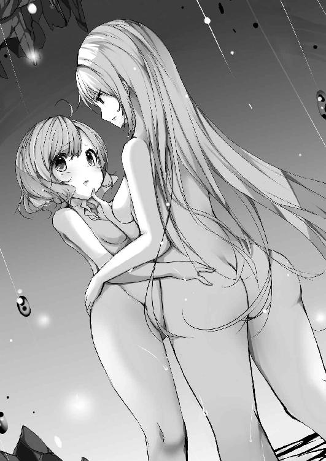
「やっぱりベルの体って気持ちがいいわ。でも、以外と筋肉もある感じね。お尻はふにふにで柔らかいけれど」
「あ、あう。やっぱりお尻を触られるのは恥ずかしいというか、変な気持ちになってしまいます」
ベルルルッティエが顔を赤らめながら身をよじらせる。
「変な気持ちって？」
「な、何でも無いです」
ベルルルッティエは慌てて話題を逸らす。
「わたしもヴァンテさんほどではないですけど、力には自信があります。そうしないと、回復力が出せませんから」
「ああ、そういえばそうよね」
アイラはお尻から太もも、腰や腕などベルルルッティエの体を一通り触っていく。
「アイラさんばかり触ってずるいです。わたしも触ります」
負けじとベルルルッティエもアイラの体を触り出す。
「わあ、凄い」
アイラの肉体は、ベルルルッティエのように、殴る為だけに鍛えたのではない。剣を振るい敵を倒す為に鍛え上げた肉体だ。乙女の柔肌の下には、まぎれもなく戦う為の筋肉で武装されていた。
「む、胸も触っていいですか？」
最後にと、ベルルルッティエは思い切って尋ねる。
「いいわよ」
アイラはそれを快諾する。
「で、では――」
ベルルルッティエがアイラの胸に手を伸ばす。
そこだけは張りはあるものの、柔らかい弾力に満ちあふれていた。
思わずベルルルッティエは自分の胸と触り比べをしてしまう。
ベルルルッティエの胸はお世辞にも育っているとは言いがたい。手の平の中に余裕で収まってしまう程度だ。それに対してアイラの胸は手の平から余裕ではみ出してしまう。
「す、凄いです」
夢中でベルルルッティエはアイラの胸を揉んでいた。
今を逃したらもう二度とこんな素晴らしいものは触れないとでもいう勢いだ。
「あ、あの、ベル......」
アイラが申し訳なさそうに声を上げた。
「そんなにされると、その......私も変な気分になってしまうから......」
「あっ、ごめんなさい。つい羨ましさと気持ちよさで――」
「ううん、いいのよ。ベルが触りたいと言えばいつでも触らせてあげるから」
「えと、その、ありがとうございます」
アイラとベルルルッティエは、お互いの事を見つめ合いながら頬を染める。
それから二人で体を綺麗にし合い、下着と汚れたスカートなどを洗ってからヴァンテとシャルティアーナの元へ戻ったのだった。
「随分といちゃついてたみたいじゃない」
寝床に決めた横穴の前では、ヴァンテが火の周りに干し芋を串に刺して並べていた。
「あら、女の子同士の水浴びってあーいうものでしょう？」
アイラは自分の体を手ぬぐいで拭いた後、ベルルルッティエの体も拭いてあげる。すっかり女の子同士らしさ？ を体験して、アイラは上機嫌だった。
「あれが普通だったら今頃人類は滅んでるよ」
「どういうことよ」
「なんでもない。その芋は食べてていいから」
そう言って、ヴァンテは立ち上がる。
「シャルーあたしたちも水浴びに行こう」
「ええ、そういたしましょう」
ヴァンテの後をついて行きながら、シャルティアーナが一度アイラ達の方を向く。
「うっふふ。ヴァンテさんってばお二人の会話を聞きながら、ずっと顔を真っ赤にしていましたのよ」
どうやらヴァンテもソードクラスので無骨な女子同士の日常しか知らないので、アイラ達のいちゃつきは耳に毒だったようだ。
「シャルー、ほら早くおいでよ」
「ええ、わかっておりますわ」
シャルティアーナは「うっふふ」と微笑みながらヴァンテの後を追ったのだった。
シャルティアーナが豪快にローブを脱ぎ捨てる様子を、ヴァンテは目を見開いて見ていた。
そこからこぼれ落ちるのは巨大な肉まんじゅう。いや、そんなものではない。ヴァンテがこれまでにお目にかかった事のないほどのたわわな果実が二つ実りを結んでいたのだ。
その果実をシャルティアーナは惜しげも無く披露する。
「ひゃあ、凄いとは思ってたけど、これほどとは」
「あら、ヴァンテさんも興味がありますの？ わたくしたちもいちゃいちゃしてみます？」
「えっ、うーん、いちゃいちゃするかはともかく、それは触ってみたい」
ヴァンテは素直に欲望を口にする。
「ええ、よろしいですわよ。どうぞご自由に」
シャルティアーナはぶるんと胸を震わせながら、ヴァンテに胸を差し出す。
「うわっ、いやー、これはありえないでしょ。こんなのがぶら下がってたら戦いどころじゃないよ」
そう言いながらもヴァンテはシャルティアーナの胸を存分に揉みしだき、最後には顔まで埋めて堪能していた。
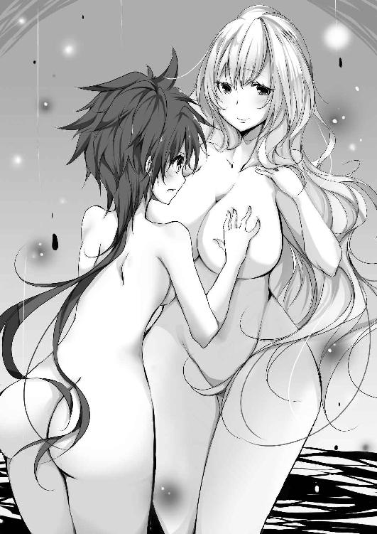
「一体この胸に何が詰まっているのさ」
ヴァンテが、シャルティアーナの胸をつつきながら本気で不思議そうな表情を浮かべる。
「魔力かしら？」
組んだ両腕の上に胸を乗せながら、シャルティアーナは微笑む。
「ちゃんとした検証はされていないけれど、胸の大きな女性ほど魔力が高いとされているわね」
「むむむ」
ヴァンテは自分の胸とシャルティアーナの胸を触り比べてみる。
ヴァンテはベルルルッティエほど小さくはないが、それでも平均よりは小さい方だろう。
「ヴァンテさんはあれだけ強力な魔法剣を生み出せるのですから、胸の大きさは多分関係ないのではないかしら」
「いやー、あれは結構周囲の魔力素子を使ってるからなぁ。シャルの胸からは凄味を感じるし、あながち間違いじゃないかも。だとしたら、シャルってどんな魔法使うの？」
「それは、今は秘密にしておこうかしら。もちろん使わなければいけない場面があれば使いますけれど、楽しみにとっておくというもの良くないかしら」
「まあいいけど」
そういえば、とヴァンテは思い出す。
鉄喰いを見ても、シャルティアーナはそれほど怖がっていなかった。それは、アイラが倒すと思っていたからではなく、いざとなれば自分がなんとか出来る自信があったからでは？ と――
「それよりも、今度はわたくしの番ですわよ」
シャルティアーナが両手をわきわきとさせながらヴァンテに迫る。
「えっ、何その手は。あたしなんかの体を触っても何も面白くないよ？」
「面白いか面白くないかはわたくしが決めます。ヴァンテさんの体のどこにあれだけの力があるのか興味ありますから」
「いや、ダメだって。あたしそういう女の子同士の交流とかしたことないし――」
ヴァンテがゆっくりと後ずさるが、
「ダーメ。さんざんわたくしの胸を揉んだのだから、諦めて体を差し出して下さいな」
問答無用でシャルティアーナに抱きしめられ、全身を触られてしまう。
「うーん、柔らかくはあるのですけど、筋密度がやたらと高そうな感じですわね。それがバカ力の原因でしょうか」
「そ、そうかもね」
全身をくまなく触られ精根尽きたヴァンテは、水辺にぐったりと横たわりながら、適当に返事をしたのだった。
「どうだった、あたしたちのいちゃつき具合は」
「えっ？ 気持ち悪かったわよ」
野営地へと戻ってきたヴァンテ達を、アイラは興味なさげに出迎える。
ヴァンテはどうだと言わんばかりであったが、アイラにとってはどうでもいいことだったのである。
「酷くない、それ」
さすがのヴァンテも口を尖らせる。
「あーいうのは、私とベルみたいな美少女がしてこそでしょう」
「うーわ、この人自分で美少女とか言ったよ」
「あら、本当のことでしょう？ ヴァンテだって言っていたじゃない。それよりも乾かすものがあったら早く並べて頂戴ね。乾いたら加熱魔法に切り替えるのだから」
「へいへい」
もう何を言っても無駄だなと悟ったヴァンテは、言われたとおりにブーツと下着類を炎の周りの岩に乗せていく。シャルティアーナも下着とローブの裾を洗ってきたのか、それらをヴァンテと同じように並べていく。
そして、二人とも裸のまま炎の周りに座ったのだった。
「貴女たち、他に着るものはないの？」
アイラがため息を吐く。
「そんな余分なもの持ってくるわけ無いじゃん」
「そうですわ。それに裸の方が落ち着きますし」
シャルティアーナはどうやら裸族のようであった。
「下着の替えくらい詰め込む余裕はあるでしょうに」
裸の二人に対し、アイラとベルルルッティエは下着の替えはちゃんと持ってきていたし、上着は洗っていなかったので一応はまともな格好になっている。
「どうせすぐ乾くから大丈夫だって」
「そうかもしれないけど、学院の生徒として恥ずかしくない格好をしてほしいものだわ」
「もう委員長みたいな事言わなくていいからさ」
「だって委員長だもの」
「それよりも、今後の予定を確認しよう」
わざわざこんなことでお説教はされたくないと、ヴァンテは話題を変える。
「素っ裸の人と打ち合わせをするのってすごく馬鹿らしくて嫌だけれど、仕方ないわね」
アイラはため息を吐きながら地図を広げる。
「今日は服を乾かして食事を済ませたら早めに寝ましょう。寝床の岩に加熱魔法を使っておくから、寝心地は悪いけれど寒くはないはずよ。入り口には私が盾で蓋をするから、夜中に魔物が襲ってきても中へ入られるということはまず無いはず。それでも見張りは立てましょう。おおよそ二ジゲンずつくらいの交代で、ヴァンテには明日偵察で走って貰うことだし、ヴァンテが一番初めで、その後にベル、シャルティアーナ、私という順番でどうかしら」
「途中で起きなくていいのは楽だし、あたしはいいよ」
「わたしも大丈夫です」
「わたくしも問題ありませんわ」
全員が頷いたのを確認して続ける。
「正直、偵察はかなり危険が伴うと思うから気をつけてね。まさか鉄喰いがいるとは思わなかったし、奥へ行くほどもっと強力な魔物がいると思っていいかも」
「そこら辺は任せなって。基本的に魔物と戦うつもりはないし、ダッシュで行って様子を見て、ダッシュで戻ってくるつもりだから」
「ええ、それでお願いするわ。もし、ヤバそうだと思うような魔物なり場所があったらその時点で引き返してきて頂戴。決して一人でなんとかしようと思わない事」
「了解」
「残り四区画、何事もなければいいのだけど」
アイラは天を仰ぎ見たが、そこには真っ黒な岩肌が広がっているばかりだった。
鉄喰いが最大の難関であったのなら良いのだが、どうにも嫌な予感がする。
騎士達ですら足を踏み入れた事のないこの先に何が待っているのか。
「アイラさんどうかしましたか？」
ベルルルッティエが心配そうにアイラに寄り添ってくる。
「何でも無いわ」
アイラはベルルルッティエを抱き寄せて、不安を打ち消すように炎を睨み付けた。
「大丈夫、何があってもみんなの事は私が守ってみせるわ。そして、一緒に卒業しましょう」
「はい」
アイラの力強い言葉を信じてベルルルッティエは頷く。
（そう、どんなことがあっても試験の証を見つけて卒業してみせる）
各々の問題の事はともかくとして、それだけは確実に成し遂げてみせる。
アイラは固く心に誓ったのだった。
―― 了 ――
この度は「最強無敵？の落第候補生」をお読み頂きありがとうございました。
なんだかよくわからない強さを持っているにも関わらず、王立学院退学の危機にさらされている少女達の物語でございますが、いかがだったでしょうか。まだまだ謎の多い部分もあるかと思いますが、しばらくお付き合い頂ければ幸いです。
さて、この物語は基本ファンタジーということで、魔法や剣での戦闘シーンが出てきますが、魔法について少し解説をさせて頂きます。魔法の理論については、さまざまな著者様が独自に理論を組み上げたりしていますが、私も少しだけルールのようなものを作っています。
まず一つ、魔法の発動について。
魔法を発動させる為には、起動の為のキーワードが必要です。アイラで説明しますと「我が呼びかけに応えよ、シルト」という言葉がそれです。これによって、パソコンでいうところの実行ファイルを起動し、プログラムを立ち上げた状態になります。いわゆる音声入力です。
二、魔法の使用について。
魔法を発動できる準備が整ったら、次はどのような処理を行うかです。アイラが、
「銀魔の盾は我を護りし七つの衛星となりて、我に仇なす物全てを討ち滅ぼすだろう――ズィーヴェン・シルトーッ！」
と言う場面がありますが、これによって、魔法の盾を七つ展開し、防御と攻撃両方を行う処理を実行します。
処理内容はあらかじめ術式を組んでありますので、それに従い通常はアイラの周辺で待機し、敵の攻撃意志を感じ取れば迎撃に向かうことになります。
ただこれだと応用は利かず、同じ動きしかしません。味方であるヴァンテの攻撃に反撃するのもその為です。
三、術式について
魔法を使うには起動の為のキーワードと、発動の為の術式名が必要です。
前述でいうと「ズィーヴェン・シルト」が術式名です。では術式はどこにあるかというと、あらかじめ組んで体内に刻んであります。
魔法の盾を作るのに魔力素子を物質に変換するプロセス、自身の周囲を回らせる為の距離やスピード、殺気感知をどのように行うか、またそれに対する反応など事細かに仕様を作り上げ、バグのないように組み上げた物が術式です。
既におわかりでしょうが、ようするにパソコンのプログラム言語と同じです。
魔力があれば誰でも魔法を使える世界ではありますが、一から術式を組み上げられる人はあまりいません。それができるのが魔術師――プログラマーというわけです。
一般の人は、魔術師が組み上げた「指先から十センチ先にあるものに火を付ける魔法」なんかを買い、自身に術式を刻む――インストールしたりします。
四、応用について
「指先から十センチ先にあるものに火を付ける魔法」は便利かもしれませんが応用が利きません。二十センチ先に火をつけたい、一メートル先に火を付けたい。そうなったときにどうするのか。それ専用の魔法を買うのも一つの手ではありますが、たったそれだけの為に新しい術式を刻んでいたら容量が足りなくなってしまいます。それでは大変ですので、自分の魔術式を売りたい魔術師は、応用が利くように作ります。
火を付ける魔法にファイアと名前を付けたとすると、その前に「我が指先に」や「視線の先に」などといった言葉を付けられるようにします。それによって、
「我が指先に火を灯せ――ファイア」
と術式を発動させれば近くに火を付けることができますし、
「我が視線の先に火を灯せ――ファイア」
とすれば、かなり遠くまで火を付けることができるようになります。
このように動作の設定をある程度変えられるようにしています。
アイラが「銀魔の盾は我を護りし七つの衛星となりて、我に仇なす物全てを討ち滅ぼすだろう――」
と言っている部分がそれですね、アイラがどのように術式を組んでいるかにもよりますが、「七」を「十」にすることができたり、「我に仇なす」を「我が敵」にとすることで味方を除外できるようにしていたりするかもしれません。
また、「我に仇なす」の文字列にも沢山の意味――術式が組まれていたりして、色々と複雑に絡み合って魔術式は出来ています。メインプログラムとサブプログラムのような関係ですね。
このように、劇中では魔法のルールを設定しています。まあそれが生かされる場面があるかどうかはわかりませんが......。
もしくはそのうち形骸化するかもしれませんが......。
そんな感じの世界で繰り広げられる「最強無敵？の落第候補生達」をどうかよろしくお願いします。
最後になりましたが、可愛らしいイラストを描いて頂いたうみのみず様、また、この本の編集に携わって頂いた方全てに感謝いたします。
それではまた次巻でお会いできることを祈っております。
百鬼コウ
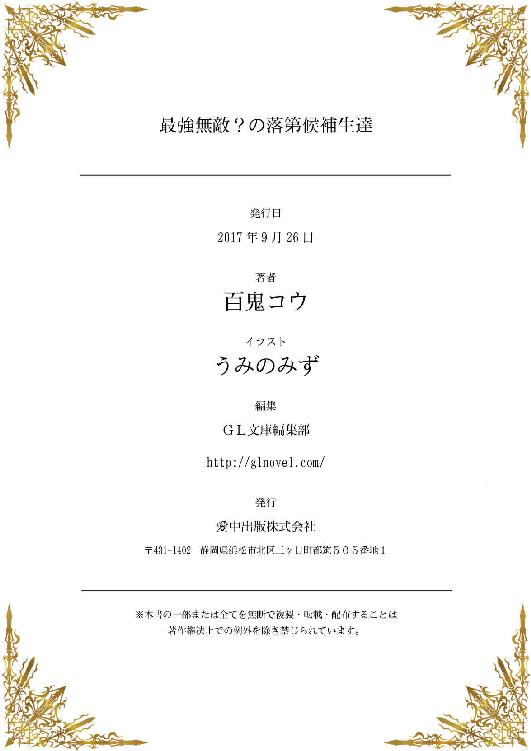
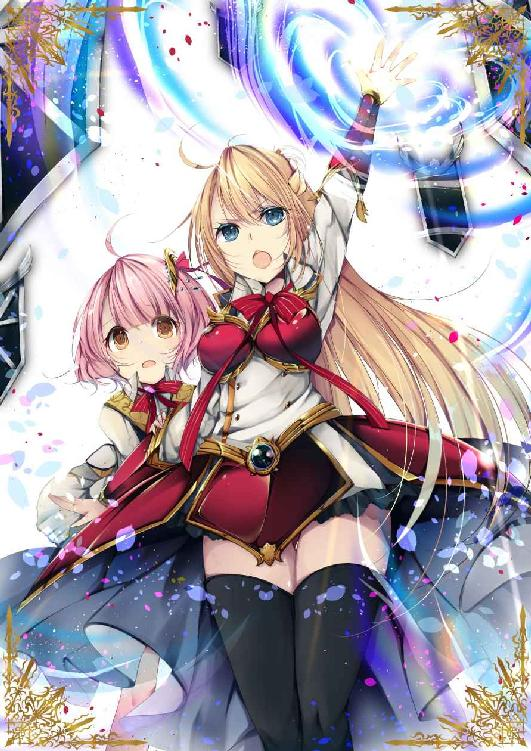